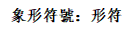
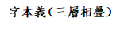
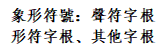
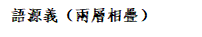
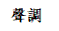
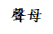
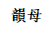
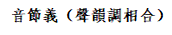

�h�Z音�x表
徐健顺
目��
一、�f明…………………………………………………………………2
二、�h�Z���{音�x表……………………………………………………12
三、上古�h�Z��母音�x体系表…………………………………………13
四、上古�h�Z��母音�x体系表…………………………………………15
五、上古��母音�x表……………………………………………………16
六、上古��部音�x表……………………………………………………25
七、平水��音�x表………………………………………………………33
八、�F代�h�Z��母音�x表………………………………………………46
�f明
一、 本表是�榱朔����h字教�W、吟�b教�W、����分析和�p析表演等而����，不是�W�g研究，而是教�W��用，因此特�O�h�Z拼音�M音等�热荨＞�者不是音���W���I，又粗糙初��，其中必多�e�`�\陋之��，����方家指正修改，以期改�M，不�俑屑ぁ�
二、 本表是�鹘y的�����W和�h�Z�Z源�W的��用，是很多祖先前��和��代�W者��的研究成果的�D化。古音系�y主要�裼猛趿ο壬�的���M，其中��者的��人臆�嗖蛔�挂�X，然有�e��，��承其咎。
三、 �Z言��音的来源，有�M��、象似�煞N方法。象似是用�l音�^程模�M、象徵�Z�x的��音方法。�@也是主要的��音方法。�M��方法即直接采用自然界的声音。两种方法在音形义关系上是一致的。
四、 �h�Z�Q生之初，先民以音表�x，方可交流，故�Z音有涵�x。�Z言一旦形成，在口�Z中�Z音的涵�x就基本失去了作用。而���~文�x非口�Z，其�c口�Z差��之��，正是涵�x凸�@之��，此涵�x正�碜哉Z源的音�x。而�Z音流��也��造成音�x的改��，所以中古以後的音�x可能���c上古的音�x有所差��，而�c字音字形有所����。因此特在上古音�x表之外，又作平水��音�x表以�w�����~用��，作普通����母音�x表以�w��普通����母。之所以�]有做普通����母音�x表，是因�楝F代白����的押��不拖�L，��的音�x不�@，意�x不大。
五、 �@套表的�u作�^程，是首先按照�����{把字�w��排列好，然後�γ恳活�字的上古形、�x�M行考察，主要是考察前���W者���@��字的形、�x的研究成果，尤其是�αx的推�啵�然後���Y出�@��字的上古字�x的共同�c。然後�C以�@��字的共同�l音方式，看是否有明�@的�P��，可以�陌l音�^程上做出解��。最後，所有的音�x�P�S出�硪葬幔�再整�w�^察，是否形成一��整�w，有�o相互矛盾的地方。�哪壳暗那��r看，基本上能找到同��字的同�x，�K且�c�l音�^程有明�@�P��，�K且�@些音�x�P�S��是能形成一���w系的，比如，�_口度和字�x的�_合洪��有�P，送�夂土α窟h近有�P，�l音部位和高下�^程有�P，舌�B即�p�|、�D�骸⑵秸埂⒏叩秃托再|���B有�P，等等，所以才���h�Z音�x�P�S的存在比�^有信心。
六、 上古�h�Z可�穆�母、��母、���{三��方面考察音�x�P�S。
���{：平上去入，是情�w的��序，一��比一��情�w性更��。平��中正平和，上����小�H密，去�����Q明�_，入��快速�Q�^。
��母：唇、舌、�X、牙、喉，�@����序的�l音部位是依次後移的，�l音的用力程度是依次�f加的，所以，五�N��母的涵�x在用力、���{方面是依次�f加的。唇音多是�幼鳎�有�_始或�Y束之意。b、p主要是�_�⒌��幼鳎�m主要是�]合的涵�x。f是中古分化出�淼模�在唇音之後有介音i\u，所以是比�^�p柔地�_始之意。舌音多有明�_肯定之意。快速�|及上��的音如d、t，有打�簟⑴鲇|的涵�x。�D�荷项�的音如n有�D�骸⒂H密、��起的涵�x。牙音是用力的意思，因�橹饕��佑昧酸岵垩溃�那是咀嚼的工具，而且多是舌根堵塞再�_�獍l音，所以多是�D�骸⑼婆e、向上的涵�x。相比而言，�X音更有聚焦、尖��、推送的涵�x，因�辇X是用�硪Ш隙�不是嚼碎的，而舌尖的推送感也非常突出。喉音h的�l音是�牡撞看蜷_�_出送�猓�所以多有呼喊、打�_、�_出之意。
我把唇、牙、舌、�X、喉部位的主要�o音叫做“根音”，其他的音可以看作是它衍生��化出�淼摹Ｗ�化的方式�c涵�x有密切的�P�S。根音通�^口腔的形�詈透杏X表示某�N���B；其擦音�t表示�@�N���B出去了；其送�庖��t有送出很�h、�U散出去的涵�x；其�嵋��t有深沉、有力、低位元的涵�x；其反音，即反向�l��的音（比如m就是b的反向�l音）�t是���B反向的涵�x（b意�_始、�_��，m意�Y束、�]合）；其半音�t是突破�@�����B的涵�x，因�橹皇Ｏ乱话氲����B在了；其�F音�t表示�@�����B的收�s���B；其尖音�t表示�@�����B的精�����B；其�p音（即後接小�_口介音，如後�硌莼�成的唇�X音）�t表示�@�����B的�p柔���B。
��母：古人有四呼、等��、洪��之分，�c此相似，但是那是�目谡Z的字音上�碚f的，所以也考�]了���^的因素。在��歌中，其��更重要的是��，是��腹和��尾，���^的�r�L很短，基本不��凸�@涵�x，所以我在�@�e做了一些角度的�{整，��大家比�^���蔚仃P注��腹和��尾就行。
具�w�碚f，ɑ有�_放之意，o有�A通之意，e有延伸之意，i有扁小之意，u有舒��之意，ü有���L之意。它��的�M合�t是某�N��化�^程之意。
鼻音��尾nɡ�l音部位比�^高，有�r候有高位之意。所以ɑnɡ有�_��向上之意，onɡ有通透正大之意，enɡ有延伸深入之意，inɡ有���L上升之意。n�l音部位比�^低，有低位或平位之意，所以ɑnɡ是伸展向上，ɑn就是伸展下收或平收之意。又因��n是�]口音，因�槿丝奁�的�r候，鼻子��堵住，�f什�N字都��n��尾，所以反�^��n��尾也有抒情之意。“清明�r��雨����——”，“月落�跆渌��M天——”，只要拖�L��尾，就能感受到抒情的��味。
古��母的��尾��有[p]、[t]、[k]、[m]等，�F在的普通��都�]有了。�@些��尾也各有涵�x。[m]表示�Y束和�]合，和��母m的涵�x一�印�[p]、[t]、[k]都是�l音���荩�而非英�Z那�����H�l出�恚��@在今天的南方��和日�Z、朝�r�Z中都��有保留。所以[p]、[t]、[k]都是堵塞住而不�n破，因此都有聚合的意思。三��音各�凫洞揭簟⑸嘁簟⒀酪簦�因此又各有其特色，堵塞的位置�那跋蜥幔�其涵�x也��得越�碓接辛α俊�它们�c前面的元音�Y合在一起，各自表�_��特的涵�x。
七、 �h�Z最初是以�Z音�楹诵���建起�淼恼Z言系�y，以音表�x，以音�e�x，最後形成音��的涵�x。其後造文，以象形�S富�Z�x，同音��可分成不同的��符，以音形表�x，以音形�e�x。再其後造字，以��符�樽指�，配以不同形符，�^�m�S富�Z�x，同�r同音以同�x，��音以���x。如此形成了�h�Z�h字的精美��大的系�y，���偈浪�罕��。�Z音核心，可以突破��下�h字教�W的困境，��於�和�建立正�_的�Z感、字感、��感，��於重建�h�Z�h字的字典和教�W系�y，直至��於全民族恢�臀幕�自信心都是必由之�健�
八、 �h�Z�h字的音形�x�P��式�Y��如下�D所示，�热Φ谝����槁����{�M合的音���x，其涵�x���穆�母的涵�x出�l到��母的涵�x的�^程，���{是其情�w涵�x，�@就是初民未有文字�r的�h�Z的音�x�P�S。後����造象形文字，即加上中�g一�拥南笮畏���，�@些符��就是字根，其中包括��符字根、形符字根和其他字根，�@些象形符��的涵�x，�B加在音���x上，即形成了字根字的字�x，即�Z源�x。再其後，加上外�拥南笮畏���，即形符，再�B加上一�有畏��x，合�樾温�字的字本�x。形符可以加不止一�印＿@些本�x其後��可以再演���橐�申�x：




�h�Z音形�x�P系�Y���D
�难e圈到外圈的�P�S是���盈B加的�P�S，不是���蔚南嗉踊蚪患��P�S，也就是外圈的涵�x�B加在�热Φ暮��x上，外圈的涵�x是���热�涵�x的一�N限定、修��，一方面把�热�涵�x的�����s小了，一方面把整��字�x的�群��S富了，即：
�h字字�x=以���{�x�榍榫w的——�穆�母�x出�l——到��母�x的�^程的——��符�x的——形符�x。
或者：
�h字字�x=形符�x的——��符�x的——以���{�x�榍榫w的——�穆�母�x出�l——到��母�x的�^程。
同一��音��可以有不同的象形符��，表示�c�Z音不同的涵�x，�B加在音���x上，形成�Z源�x。��符的涵�x�c音��的涵�x通常是不一�拥摹�
比如，“廾”和“公”的音��都是[kioŋ]，即中文拼音giong，音���x都是推�e向上。“廾”�樯下�，情�w�榧�小�H密，符���殡p手，所以字�x�殡p手恭敬地推�e向上，“公”�槠铰�，情�w�橹姓�平和，符���榉炙剑�私�a分�楣��a，即升格�楣�有，所以字�x�樗疆a分��升�楣��a。
再如，“今”和“金”的音��都是[ki«m], 即中文拼音giem，音���x都是推�D出去一�c，都是平��。“今”的符��是�w子�_�⒁��l�p，所以字�x�樯w子打�_後後推�D出去一�c，或者被�w子�撼鋈ヒ稽c，後引申�殚_始。“金”的符�����H上也可以看成是“今”和“土”的��意，是“今”在“土”中，所以《�f文解字》�f是“象金在土中形”，所以其字�x是�耐林��D�撼鋈ヒ稽c，�@就是淘金的�^程，也�c五行土生金有�P。
“金”是平��，“��”是去��，���{的改��，�耸玖苏Z�x在情�w上的��化。“��”是�]口不言，噤��的意思，�@然比“金”在情�w上更有明�_�远ㄖ�意，因此改�槿ヂ�。再如“今”的��母是[K]，而“吟”的��母是[ŋ]。��母[K]即�F代�h�Z拼音的ɡ，是由舌根堵塞住再打�_，首先感到�毫Γ�然後接�l��音，把�毫ν频缴囝^和上�|��，因此多表示�D�骸⒓�薄、推�e之意。疑母[ŋ]即�F代�h�Z拼音的nɡ是後鼻音，因此多表示��起、突兀、宏�ブ�意。[ŋ]比 [K]更有推送之感，因此“吟”改用疑母[ŋ]。
“吟”字的字根是“今”。“今”的上古���{�槠铰�，��母����母[K]，��母�榍植�[i«m]。查《�h�Z音�x表》，平��的情�w涵�x是平常。��母[K]是由舌根堵塞住再打�_，首先感到�毫Γ�然後接�l��音，把�毫ν频缴囝^和上�|��，因此多表示�D�骸⒓�薄、推�e之意。��母侵部是������，是小�_口元音收於�]口m音，有�阂指校�因此多有包含、�]合、深入之意。音���x是以���{�x�榍榫w，�穆�母�x�_始到��母�x的�^程，即：
平常的——推�D之後——又�]合的�^程。
可改���椋�推�D出去又消失。
象形符����符“今”（今）的涵�x是�w子打�_一�l�p。�@��符��的涵�x�B加在了音���x之上，形成了�Z源�x：�w子�D�撼鲆��l�p之後又消失的�^程。白川�o先生�J�榕c祭祀有�P，後即引申�殚_始的意思。
凡“今”的同源字都有此�x，如“衿”�樯弦骂I口，即上衣�_�p��；“妗”�榕�子笑貌，即抿嘴而笑，或���X而笑；“矜”�槊�柄，即矛的�_始��。等等。
“吟”字是在字根的基�A上，加上了象形符��形符“口”。其��母改�檠酪�疑母[ŋ]。因此其音�x微�{��：
平常的——��出之後——又消失的�^程。
字本�x即�椋嚎诘纳w子（嘴唇）�D出一�l�p之後��出去又消失的�^程。
此即“吟”的本�x。其後“吟”字有低吟、吟唱等之意，�橐�申�x。
不了解�h字的造字�^程，不能�囊粜瘟x一�w的角度去�x取�h字信息，就��造成信息�G失。比如�f，“兔”�@��字，甲骨文��“兔”，篆����“兔”，很多人��了以�檫@��字的意思就是“兔”�@�N�游锏耐庑危�《�f文解字》也�f：“�F名。象踞，後其尾形。”但是�@�拥目捶ê雎粤苏Z音的涵�x，���H上上古之人看到�@��甲骨文，他��除了知道了�@�N�游锏男��钐蒯缰�外，����得到另外一��信息，就是�@�N�游锼俣群芸欤��y以捉摸，因�檫@��字的上古�x音，��母是透母t，有�_出、打通之意，��母是�~部a，有打�_、�U展之意。如果上古也是去��，有���Q、明�_之意，合起�恚�就是迅速�_出去，方向不定，跑得很�h的感�X。只看字形，�G失了很多�Y��。
古人在造字的�r候，字形之意�c字音之意往往不同，字�x乃是以�烧咧�和�榛��A的。古人在看字的�r候，得到的也就是音形�x一�w的信息，�@�N�x��之法，是我��今天很�y�w��到的了。
九、 探究音�x�P�S，���恼Z言源�^入手。本表可查常���h字的上古音�x�P�S。方法是�穆��{音�x表、上古��母音�x表、上古��部音�x表中分�e查找此字的��、��、�{的涵�x，按照�l音�^程�M合起�矶�探知其音�x�P�S。
十、 古音���M各家�H有差��，然�恼Z音系�y整�w�碚f，各家��是大同小��。音近�t�x近，本表���Y的是音�x�P�S，同一��字各家���M古音只要接近，音�x�P�S也就接近。王力先生的系�y最�楹���，因此�裼茫�但其他各家��音也可同理推出。各家��於上古�h�Z�Z音的整�w�P�S�Y��差��不大，比如��於��母��部分��的差��不大，只是�σ艄�的���M各��，�@些差��，基本上��於�h�Z音�x�P�S系�y的存在�K不��成矛盾。比如“�h”字，李方桂先生�M��[han]，王力先生�M��[xan]，����尚方先生�M��[hnaan]，三家只是在��母的送�獬潭群蜕辔簧嫌胁町�，而[h]、[x]、[hn]三者很接近，音�x也就接近。按照本表，[x]多表示呼喊、打�_、推�e之意，[h]多表示��力、�_出、���@之意，�烧呓咏�。[hn]本表中�]有，����先生�f是�Ч谝舻那�n，本表���Y[n]多表示�D�骸⒂H昵、�庵兀�前加冠音送�猓�也就是�D出、���ァ⑸煺怪�意，�c前�梢舻暮��x接近。“�h”本是�h水之名，�Z音的��母表示�_出，��母是元部，表示伸展、沉�e、下收，���{是去��，表示���Q、明�_，合起�砭褪��_出去���Q地伸展�_，�c�h水之�^感完全一致。三家�m互有差��，但都能�f明�h�Z�Z音精美的音�x系�y。
十一、 上古音���M的重要材料之一是上古��歌，尤其是《����》的押��。然而��知�槭颤N�h�Z��歌要押尾��。世界上很多�Z言的��歌不押��，或不押尾��。押��是出於歌唱和�b�x的需要。首先歌唱需要辨音，不能倒字，才能�_到���Ψ铰�歌的目的，而�肪浣Y束音又多半是主音或支持音，也就是同一��音，因此���{�Z言的��歌�缀醵佳赫{，即尾字是同一���{，但有些不押��。�h�Z��歌的��是包含���{�c��母的，所以首先也是押�{的。重���h��押��的押�{因素非常重要，由此就���P注到上古�h�Z���{的音高型特徵，��管它也有旋律型和音�L型特徵。�Q��如�Q���{，即是�Q主音�Q�m�{，情�w大��；�Q��如不�Q���{只�Q��母，�t是延�m主音、�m�{，情�w微�{。再由此而到“四���ξ逡�”�f的考察，或可因此通融�Z言、音�贰⒃�歌，而解�_上古�h����律和旋律之�i，�K推知後世�Z音、格律、音�费葑�之理。再由此而知�h��文的�x法之重要，不可�y�x之��矩，而�团d“吟�b”，重振“小�W”。���W教育或可由小�W而大�W，�毓恃�正而重建。
十二、 我所使用的工具��和前���W者著作主要有《古文字�b林》（李圃）、《�h�Z音�x字典》（�R�_天、�R小乎）、《古代�h�Z》（王力）、《�h字古音手�浴罚ü��a良）、《新音���W》（周祖庠）、《上古音系》（����尚芳）、《常用字解》（白川�o）、《���f�h字》（左民安）等。
十三、本表����，得朱立�b博士後、��昊老��的大力�f助，在此深致�x意！
徐健��
2016年12月20日
�h�Z���{音�x表
�� | �{ | �{型 | 音�x特�c | 上古�{值 | 中古�{值 | 普通�����{ | 普通���{值 |
平 | ��平 | 低平 | 平常、中性。 | 低 | 低 | 一�� | 高平，55。 |
��平 | 平常、中性、低沉、有力 | 最低 | 二�� | 高升，35。 | |||
上 | ��上 | 前低後高，前部或平拖或下降，有一定�r�L。 | ��小、�H密。 | 半高 | 中或高 | 三�� | 曲折，214。 |
��上 | ��小、�H密、低沉、有力 | 四��（全�崧�母的上����成去��，清和半�崧�母的上��仍�x三��） | 高降，51。 | ||||
去 | ��去 | 高降，�母咛�立即下降。 | ���Q、明�_。 | 高 | 中或高 | ||
��去 | ���Q、明�_、低沉、有力 | ||||||
入 | ��入 | 短促，升降平都可能。 | �Q�^、快速。 | 半低 | 中或高 | �o（入��消失，分�e�M入一、二、三、四��） | �o |
��入 | �Q�^、快速、低沉、有力 | ||||||
�湓]：1．“上��高呼猛烈��”是中古以後的一�N�x法，把上��前低部分�s短或去掉即得，不是�x音之�x，而是�x法之�x。因此中古以後上�������~明�@有豪放、婉�s�煞N�L格，�w�x法不同之故。 2．�ι瞎怕��{�{值的判�啵�主要�碓挫���“四���ξ逡�”之�f及相�P�Z言、音�凡牧系目疾臁� | |||||||
上古�h�Z��母音�x体系表
方法 | 根音 | 擦音 | 送�庖� | �嵋� | 反音 | 半音 | �F音 | 尖音 | �p音 | |
部位 | 涵�x | ���B | 出去 | 送�_ | 有力，低沉 | 反向 | 突破 | 收�s | 精�� | �p柔 |
唇音 | 拼音 | b | p | b�� | m | |||||
字母 | �� | 滂 | �K | 明 | ||||||
音�� | [p] | [pÁ] | [b] | [m] | ||||||
涵�x | �_始/打�_ | 散出去 | 有力地�_始/打�_（向上） | �Y束/�]合 | ||||||
舌�^音 | 拼音 | d | t | d�� | n | l | ||||
字母 | 端 | 透 | 定 | 泥 | �� | |||||
音�� | [t] | [tÁ] | [d] | [n] | [l] | |||||
涵�x | 打�� | 打出去 | 沉重打�� | �D��/�H密 | ��力 | |||||
�X�^音 （正齿音的尖音） | 拼音 | z | c | z�� | ||||||
字母 | 精 | 清 | �� | |||||||
音�� | [ts] | [tsÁ] | [dz] | |||||||
涵�x | 精��地 推送 | 精��地 推送出去 | 有力地精��地推送 | |||||||
拼音 | s | s�� | ||||||||
字母 | 心 | 邪 | ||||||||
音�� | [s] | [z] | ||||||||
涵�x | 推送�U散 | 伸�L推送 | ||||||||
正�X音 | 拼音 | zh不卷舌 | ch不卷舌 | zh不卷舌�� | ||||||
字母 | �f | 初 | 崇 | |||||||
音�� | [ʧ] | [ʧÁ] | [ʤ] | |||||||
涵�x | 推送 | 推送出去 | 有力地推送 | |||||||
拼音 | sh不卷舌 | sh不卷舌�� | ||||||||
字母 | 山 | 俟 | ||||||||
音�� | [ʃ] | [ʒ] | ||||||||
涵�x | 推送很�h | 有力地 推送很�h | ||||||||
舌面音 （正齿音的团音） | 拼音 | zh不卷舌�F | ch不卷舌�F | zh不卷舌���F | n�F | i�F | ||||
字母 | 章 | 昌 | 船 | 日 | 馀 | |||||
音�� | [¦] | [¦Á] | [¥] | [¤] | [ʎ] | |||||
涵�x | 移向 | 移向很�h | 有力移向 向上移�� | 弱小 | ���洌����� | |||||
拼音 | x （sh不卷舌�F） | x�� (sh不卷舌���F) | ||||||||
字母 | �� | �U | ||||||||
音�� | [þ] | [ü] | ||||||||
涵�x | 移向�M�^ | 沉�辗�定 | ||||||||
牙音 | 拼音 | ɡ | k | ɡ�� | nɡ | |||||
字母 | �� | 溪 | 群 | 疑 | ||||||
音�� | [k] | [kÁ] | [g] | [N] | ||||||
涵�x | ��起 | ��出去了 | 有力地�� | 高高地 | ||||||
喉音 | 拼音 | h | h�� | �o喉/零声母 | ||||||
字母 | �� | 匣 | 影 | |||||||
音�� | [x] | [ɣ] | [Ǿ] | |||||||
涵�x | �_出 | 有力�_出 向上�_出 | 矮小 |
上古�h�Z��母音�x体系表
��腹 | ��目 | ɑ[a] �_放 | [e] ��小 | e[ə] 延�m | u[u] 舒�� | [o] | o[ɔ] �A通 | i[i] ��小 | n[n] 下收 | nɡ[ŋ] 上�P | m[m] �]合 | b[p] 有力 | d[t] 非常有力 | ɡ[k] 特�e有力 |
ɑ[a] �_放 | 拼音 | ɑ | ɑi | ɑn | ɑnɡ | ɑm | ɑb | ɑd | ɑɡ | |||||
��部 | �~ | 歌 | 元 | �� | �� | �~ | 月 | �I | ||||||
音�� | [a] | [ai] | [an] | [aŋ] | [am] | [ap] | [at] | [ak] | ||||||
涵�x | �_放 | 展�_��薄 | �_放下收 | �_放上�P | �_後�]合 | �D�� | 清除 | 巨大 | ||||||
[e] ��小 | 拼音 | i略�_ | ei略窄 | in略�_ | ing略�_ | it略�_ | ik略�_ | |||||||
��部 | 支 | 脂 | 真 | 耕 | �| | �a | ||||||||
音�� | [e] | [ei] | [en] | [eŋ] | [et] | [ek] | ||||||||
涵�x | ��小 | 更��小 | ��小�H近 | 深�h | ��密 | ��小裂�_ | ||||||||
e[ǝ] 延�m | 拼音 | e | ei | en | enɡ | em | eb | ed | eɡ | |||||
��部 | 之 | 微 | 文 | 蒸 | 侵 | �� | 物 | �� | ||||||
音�� | [ǝ] | [ǝi] | [ǝn] | [ǝŋ] | [ǝm] | [ǝp] | [ǝt] | [ǝk] | ||||||
涵�x | 延�m | �p弱 | 深入向下 | �猿窒蛏� | 包含 | 聚焦一�c | 聚集 | �【� | ||||||
u[u] 舒�� | 拼音 | u | unɡ | uɡ | ||||||||||
��部 | 幽 | 冬 | �X | |||||||||||
音�� | [u] | [uŋ] | [uk] | |||||||||||
涵�x | 舒�� | 深�h�庵� | �P�] | |||||||||||
[o] 小于 [ɔ] | 拼音 | o略小 | oɡ | |||||||||||
��部 | 宵 | �� | ||||||||||||
音�� | [o] | [ok] | ||||||||||||
涵�x | ��曲 | 跳�S | ||||||||||||
o[ɔ] �A通 | 拼音 | o | onɡ | oɡ | ||||||||||
��部 | 侯 | �| | 屋 | |||||||||||
音�� | [ɔ] | [ɔŋ] | [ɔk] | |||||||||||
涵�x | 圆通 | 正大通透 | 聚合有力 |
上古��母音�x表
部位 | 上古��母 (中古��母) | ���H音�� | �h�Z拼音�M音 | 音�x特�c | 常用字 |
唇音 | �� （�汀⒎牵� | [p] | �x似b | �湍复蜷_�p唇，���Р徽��樱�有�_�⒏校�因此多表示�_始、打�_、�l散之意。 | 巴�^八霸波播�\�馨�博�g伯跛簸迫憋�e逼彼鄙七比妣�P蔽蓖�]嬖裨俾臂泌�z�s毖庇痹畀��必碧璧辟壁�a卜布�彦ёV圃�[百柏拜杯碑卑悲北����背臂�\褒包胞苞剥��保堡葆褓�d���蟊�爆�A�s�孙j彪表班斑�C般搬板版扮半�O砭鞭���c���e蝙�H窆褊扁匾���瘫楸假S本畚彬斌��豳�e�I�l���W���P�桶钿喊癜蜉蛑r崩���l迸��冰兵�A秉丙炳邴�m柄��并�戕鸢l法��福蝠幅��府腑俯斧甫脯黼付咐�x傅富腹�}非扉�p�w匪篚�u�U痱沸否缶藩蕃反返��畈分吩粉�S�^��方坊枋���P航放�L封葑�S |
唇音 | 滂 （滂、敷） | [pÁ] | �x似p | 滂母用�庑n�_�p唇，���Р徽��樱�有出�飧校�多表示送出、爆�l、分散之意。 | 葩怕帕坡�H��叵破粕魄撇瞥睥批砒坯披丕�啥y��劈霹�浩ヱ辨清ㄆ┢ㄆ�醭怖���淦推衅珍咂骤��闩呐扰膳啧�沛霈配��泡�h炮�h漂�~剽剖攀潘番盼判泮篇偏翩�_片���_姘品聘滂�Q��胖烹澎怦砰抨俜敷孵郛莩稃���~俘孚拂���徂愿坝�副覆蝮妃霏菲�W斐肺�M��泛�锓壹�氛��芳妨仿彷�L捧�S��酆峰蜂�h烽丰 |
唇音 | �K （�K、奉） | [b] | b的�崧�即b�l音部位下移 | �K母打�_�p唇，���д��樱�有�牡吞�爆�l感，多表示爆�l、上升、�U散之意。 | 拔跋魃茇耙杷琶�T爬��勃渤泊箔帛舶薄婆鄱�e蹩鼻敝�辣蓣骆颈鼙润麇鲢管逼て［�脾裨陴毗貔枇琵蚍否痞圮�V辟甓�G哺捕部簿步埠蒲菩脯葡匍�W瀑曝白稗�∨刨脚桥票遁肀炽１罕��渑嗯阗r裴邳佩��雹抱�U暴袍咆庖匏跑瓢殍莩瘢瓣�k伴拌�P��磐蟠��叛畔辨�q弁�c卞汴忭�p便���F����笨盆�����l�l�O�A�尻虬�棒蚌旁膀彷��朋�i彭膨篷蓬病�K�{�T凭平坪�u苹瓶屏萍��乏伐�y�P佛符苻夫蚨扶芙�D浮蜉桴匐罘涪服�f伏茯袱釜腐�o父附���V���D��阜�`�透答ヶv肥淝腓翡吠帆凡�┓鞭漓墉[��藩蕃樊�\范��犯梵��焚汾棼�`������忿分份防房��肪�T逢�p�P奉俸 |
唇音 | 明 （明、微） | [m] | �x似m | 明母是�p唇鼻音，�l音�r�p唇�o�]，�饬��_出鼻腔，���д��樱�不送�狻ｉ]合感��烈，所以多表示�]合、黑暗、消�O之意。由此引申，又可�c��母�Y合，表示�拈]合中�_��，明母仍表示�]合。上古的否定�~主要是用明母。 | 麻�q�R���R�M摸魔磨摩摹�x模��膜末抹沫�]�{莫寞漠墨默陌貊貉�缑矬��`迷�i縻糜�����J麋米靡弭密蜜宓�k���玢枥涯改串�牡暮慕墓募幕木沐目穆牧睦苜埋霾�I�u�~�犒��}梅枚媒煤莓玫眉嵋湄楣霉�q每浼美袂妹昧媚魅寐��毛髦旄�d茅矛蟊卯昴茆冒帽瑁耄貌茂�Q懋瞀袤苗描藐渺秒眇�R妙���\眸侔牟某���U�m�������z蔓�M慢���z漫幔墁曼�d棉眠免勉娩冕���忆��零��曝ろ砻纥I�T�����酷壕��}�F�h��敏�°��o皿忙芒茫邙���砻を得ッ�蟒漭甍萌盟蒙�黥侩���檬猛懵孟�裘鼬Q名��冥溟暝�q瞑螟茗酩命�m巫�_�o毋��武�^舞���T侮�侦F�F�\婺物勿微薇尾娓未味晚挽�n�f万蔓曼文�y蚊雯��吻刎紊���^硭亡忘罔�W惘�y魍妄望 |
舌音 | 端 （端、知） | [t] | �x似d | 端母是用舌�^和上��碰�|�l音，快速有力，多表示捶打、碰撞、��起之意。 | 答搭耷妲靼打得德多掇朵氐低羝��滴嫡�C的底抵�观¤艿鄣僦B嚏都督堵���G肚�V��蠹�y戴�Ф秧��Φ杜s�u�v�\倒到刁貂雕凋�h���t�B兜斗抖陡�Y耽�l�G湛��丹�魏�����疸旦掂���p�d滇�c典玷店坫�|殿端短�噱�敦墩�D���c�h�醯��舻鹊识♂�叮��鼎���|冬董懂������吒舴�U�m哲磔��卓桌涿琢啄�z知蜘�{黹徵智致�e�|置窒猪�D蛛株邾竹�B竺�A著�v�]摘追�Y朝着罩嘲啁肘��沾���g��展��站�D�髡湄����������L�q�っ��夺绨Y中忠衷冢 |
舌音 | 透 （透、�兀� | [tÁ] | �x似t | 透母是先��住上��後用舌尖送�猓�所以有比�^�p巧地��出之感，多表示�_出、打通、碰�|之意。 | 他它塔�H踏榻�Y�檫�慝忑拖����妥唾柝橐拓魄�X�E�N帖�F餮梯踢剔�w替�咸樘晁S惕逖倜突�d土吐兔菟台胎�B太汰泰推腿退����叼滔掏�x�_�|�d饕��佻挑祧跳�g偷��透��坍�����c忐毯坦探炭�U添天忝腆�t��湍疃吞���M倘躺�C趟���d汀町�E通桶捅�y痛���爻反馏�魑��郗�V笞�u��敕褚楮黜怵畜矗拆��超抽瘳丑�� |
舌音 | 定 （定、澄） | [d] | d的�崧�即d�l音部位下移 | 定母用舌�^和上��碰�|，深���l音，�嶂赜辛Γ�多表示沉重、��定、排除之意。 | �_大特�Z�I舵�W��惰度踱陀��沱跎�F酡��跌叠碟牒蝶��迭瓞垤�x耋笛迪�车逸兜约e�煊]弟悌娣第睇�f棣�E��地啼蹄����荑�}提醍���x�����^�扯径哦嵌榷慑�徒屠途�T荼�D突凸待怠殆迨�H代袋岱黛玳逮埭苔�_抬�~���额j�У赖镜副I悼�����c桃逃�G陶淘掉�{�y�l�{迢苕窕挑豆逗痘�W�]�^投淡啖��澹�Q但����蛋覃潭�T���艺�痰��檀袒簟�|��奠殿�盏榈桀扁�淀甜恬田填�D殄�喽尉��F�欢阢缍茆g遁�q屯豚臀���U宕�X唐糖塘螗棠堂螳��滕�v�`藤滕�V定亭停廷庭霆蜓艇挺梃�佣炊册纪��~桐筒童僮瞳潼彤佟�Q���赊H�U着�徨�擢�S池�Y�}踟�t墀坻持术��逐舳��躅杼宁�r��箸柱住除�Τ��N�卉X翟�P��椎槌�m��召�w肇兆晁朝潮�S妯�q宙胄酎���I稠�I�����P湛�`�p廛躔篆�鞔�朕�c��沉���m橙丈杖仗�L�O�c�鲎泊编�澄������呈程酲重仲�_�x |
舌音 | 泥 （泥、娘） | [n] | �x似n | 泥母是�]合口腔�谋乔话l音，用舌尖�D�荷项�，�H近感��，因此多表�_�D�骸⒂H昵、�庵�之意。 | �{衲那�G挪懦糯�Z�I�����b�改嗄崮剽跄隳��磕淠缗�孥�w努弩怒女忸乃��奶耐鼐奈柰�H�肉��D�t呶�X�吏[淖��尿耨�~扭狃�o男南楠�Q喃�y赧黏拈�T年碾���f念暖嫩囊曩娘��能��佞�艮r�z���� |
舌音 | 余 （喻四） | [ʎ] | i的基�A上舌位後移 | 余母是用舌面和上��碰�|，深���l音，因此多有准备、趋势、移动之意。 | 耶��也野冶夜�~��曳拽掖液腋�����S�a�S��移��夷姨痍彝怡�O�r胰�U圯�z迤�F已以苡�ひ嵋桩�溢��逸佚�W�u佾亦奕弈�g�[�A�F���聚�疫役予余�N舁���e俞榆逾渝愉瑜臾腴萸庾�c窳�u豫�A愈裕喻�I�n聿���y��育毓昱煜鬻欲�j浴峪�S惟唯�u�{窑�b��姚舀�_耀曜��攸悠由油游�[�q猷��蚰酉莠牖卣�h�T柚釉�}��檐��延筵蜓埏��沿琰剡演衍�钾W�寡骧S��淫�H霪寅夤�P引蚓尹胤匀允孕羊洋佯徉�����P�����^�B�W恙�友���盈楹�A嬴瀛�I�L郢�e�f媵融容熔溶蓉庸�蜍�甬勇�ベ港x�~用�� |
舌音 | 章 （照三） | [¦] | 用舌面�ld音，接a的�r候近似dia | 章母是用舌面�D�荷项�，又用�饬餍n破�l出的��音，有用力感，因此多表�_伸出、�L�h、�U展之意。 | 遮摺折者赭蔗柘�p浙拙酌灼斫焯支枝肢卮�d祗脂祗之芝汁���b�搪�摭����只咫�T枳旨指止趾址�b�n芷制�u��至�促��v志�I痣�R�描潋钨|�e�s炙�T朱�p珠侏�Z�T煮渚主�m�诓�翥注炷蛀�T祝�F隹��惴昭招召沼照�t周�L�k舟州洲粥帚�庹舱罢��逐��D旃�����痤��４u����斟箴真甄枕�\疹畛�F�b稹振震�c���首颊抡琳恼描佰嫡普险握�征�`整拯�C症政�K螽���R盅�N�[踵�\ |
舌音 | 昌 （穿三） | [¦Á] | 用舌面�lt音，接a的�r候近似tia | 昌母是送�庖簦��饬鹘��^�D�汉芗�，因此多表示送出、�h�_、伸�L之意。 | ��扯掣�b啜�|蚩嗤媸侈�X尺�脒吵喑獬鎏�杵�|�墟�吹炊���h臭�室b�U川穿喘舛串�A嗔�_�Q春蠢昌倡猖��菖�K敞�S氅唱��秤充�n憧�| |
舌音 | 船 （床三） | [¥] | 章母的�嵋�，�l音部位下移 | 船母的�l音部位低，而又上抵上��，因此多表示送出、向上、伸展之意。 | 蛇舌射麝��食�g示�u秫�H�g述船神葚唇�_盾吮��乘塍�K�剖Ｙ� |
舌音 | �� （��三） | [þ] | �x似x | ��母是送�庖簦�有�p隙中吐�庵�感，因此多表示舒展、伸�L、�p弱等意。 | 奢�d�紊嵘��z�O�f�q�p翅啻施尸�气O蓍���袷ёR豕弛矢屎始世�菰�弑式�Y拭��室�m���]��舒抒����叔菽暑鼠黍庶恕戍��束水税����少收手首守�F狩苫��扇煽���W深身申伸呻��娠��沈哂矧舜瞬商�����x�p晌�A升�N�����俾}舂 |
舌音 | �U （�U） | [ü] | x的�嵋�，�l音部位下移 | �U母�l音部位�^低，�嶂馗型怀觯�因此多表示低下、沉�铡⒎�定之意。 | 佘折社涉�T匙豉�r�P�P��十什拾��石誓逝噬筮氏是��嗜市恃侍殊殳孰熟淑署薯蜀�偈�曙�Q�滗��l垂睡瑞韶勺芍�B邵劭召仇酬受�R授�凼垠付U�s���儒へ哔�善膳鄯嬗擅遄忱�R晨辰宸臣甚�I慎蜃���O��醇淳��常�L��嫦裳徜上尚承丞成城盛 |
半舌音 | �� （�恚� | [l] | �x似l | �砟甘怯蒙囝^抵住上��，�饬����蛇���出，最後�n�_舌�^，有�饬魈�大堵塞不住的感�X，而且此��母��度最大，因此多表示力量、�幼鳌㈤_��之意。 | 拉邋�D��辣剌�防肇燹哿_�}���j����螺�T裸摞洛落���j�C鬣躐烈列裂劣略掠犁黎藜黧�x�h�μy�r罹�P�Z梨����嫠���佣Y澧醴蠡李�e�Y理��俚悝例���畹Z�������`戾唳荔詈利痢�W吏立粒笠�n栗��力���v�r�赖[�地��R�t�z�B�o�J�|�利R�_�]�F���F���锫焚T露潞璐�`����碌鹿麓簏�A��戮���H�����H旅膂�|�@�衣��]律�G�砣R���Z�A�l�v���]�[�|勒雷擂�n嫘蕾磊累�抉缯C酹�h���I肋���诎A牢醪�Z老�忱永衣淞橇胚|撩����聊寥蓼了廖料���锹e�湎N�Шt漏陋�U��流硫旒���g留榴瘤琉柳�^�s溜�C六婪�顾{�@�h�@�m�r���[�����E�|��廉�����V帘濂�B�i�����z���磕������������勹��[�n�杪��y林淋琳霖�R�����[麟嶙�O�U�C�[���U吝�A遴���������]���嗬衫壤抢爬片�莨郎浪良�隽考Z梁粱�删n亮���v冷陵�R菱�c�N�`��伶零�g玲聆翎瓴羚囹�I�X令���\�得@�V��隆窿�]�婆� |
牙音 | �� （��） | [k] | �x似ɡ | ��母是由舌根堵塞住再打�_，首先感到�毫Γ�然後接�l��音，把�毫ν频缴囝^和上�|��，因此多表示�D�骸⒓�薄、推�e之意。 | 家加枷嘉�j佳�A�v�a�e假�Z嘏甲稼嫁架�{�r瓜刮��寡�熵愿韪绺犋�割葛�w格骼隔革个��各柯��郭��虢�劫骞�裹�^括皆�A�M喈街揭�Y劫孑羯��解介界芥疥�媒湔]偕厥蹶蕨�Q�E抉�H攫�X珏�帔a稽笄�b畸�|肌几基箕�O姬�C�I��激�艏奔�汲�臣�棘亟殛机麂己�捉o戟���^�羲E髻寄冀�K�o��既暨季姑沽辜蛄孤觚古估牯股瞽�Z�M骨汩�Y��谷故固�d雇��忽惚居��裾拘�x俱橘菊鞠掬�e莒矩����倨踞句�赵�垓�W改概溉�w丐乖�使������~���u���L瑰圭�|�����w����晷簋癸鬼�９鹳F高膏篙皋羔糕稿�c杲搞告�a�g狡佼姣�C皎�U��脚角教校�^叫徼�n勾�h�瞎饭豆胳�������媾���F�m究赳�m九久玖韭灸救��疚甘柑泔干肝乾竿感敢捍�M�株壕}�O兼�V蒹�D�g��肩�载]�p�A�z��柬��蹇�O�a�O�χG�窘ㄒ�官棺�^冠���P管��灌罐盥�T涓�N蠲�跃砭祛案�根艮亘今金襟巾斤筋矜�\�o��禁�刨蝓��L昆��琨�H均�x君�������V��缸肛港��疆僵���K�P姜江���v耩降�{光�V�V更庚羹耕梗�i耿埂兢京�G�@���芫熬�儆�i�q境敬竟�R���诫殴�工功攻弓躬�m恭供��拱����共�s扃炯 |
牙音 | 溪 （溪） | [kÁ] | �x似k | 溪母是由舌根堵塞住再用�饬餍n�_，接��音，有用力去聚焦之感，因此多表示致力、推�e、精心之意。 | 掐恰�F��跨胯珂�V科窠蝌�w�た烧n克刻客��廓�T怯�芎D契���I缺���s�_���n溪�G�s欺崎����綮�_企起杞屺芑�M乞��器��亟气�馄�枯刳骷窟哭苦�煅�酷�啃��l���^�|��屈�x�D曲去墟�_揩�P�疰z�N�G慨楷�|�髫��K快��盔���Q魁奎睽傀喟恢��考��烤靠犒敲�F巧�[�缚谶悼劭芮鹎耱强瓣���勘看刊坎�少╊��R�t�a愆�q褰���榍怖`�l欠歉�y��款犬�袢�����肯�J�趑览ん�����困康糠慷抗伉亢羌腔匡筐���坷k框眶坑�H��卿�p�A���c磬罄空孔恐控芎穹 |
牙音 | 群 （群） | [g] | �x似ɡ的�嵋簦�即ɡ的�l音部位下移 | 群母是由舌根堵塞住再打�_，深���l音，因此格外感到�毫Φ姆���，多表示用力、���选⑾蛏�之意。 | 桀�芙芙唔偾奄ぞ蚓筢热冲��O技妓伎芰�T暨忌悸期局�I巨拒距炬�n遽醵�【呔��嘱尼榍�跪�������S�w�N臼舅咎�f柩求球逑裘仇�A��件�I健�Q箝黔�j乾虔芡倦圈卷蜷拳���H廑瑾�~近琴芩禽擒勤�デ劬娇ちt强狂���L黥�颓骈压箔�蛩�F邛 |
牙音 | 疑 （疑） | [N] | �x似ng | 疑母是後鼻音，因此多表示��起、突兀、宏��之意。 | 牙芽衙涯崖��迓瓦蛾�Z俄娥峨���F�~�I愕��萼鄂噩�t我�P�I虐��月刖�[岳�纺吣摞�猊�r�U�M逆宜�x疑嶷����刈��羿�x�x�h劓屹�^�球谖嵛圜�五伍午仵忤�`悟晤寤兀�~�O禺隅愚虞�收Z御�S�R遇寓玉�z�}�y�K艾外危桅嵬巍�挝喊桨掘�獒��翱傲�蛞�偶耦藕岸�r�李�言研妍�把垓�雁�┲V唁��阮玩�B元沅�x原源����吟�y垠�l�n昂凝迎喁�� |
�X音 | 精 （精） | [ts] | �x似z | 精母是把舌尖平伸�c�T�X合���p�c而�l出的音，有推�e、尖��、�l出之意。 | 匝�t作左佐做嗟接睫���X姐借爵�D髭訾�Y姿咨粢�J��滋孳孜紫姊秭子梓恣�Q�V�W�e即�W�D脊祭�H�]���V�a稷�E����租卒��足祖�M蹙�脑栽赵纵d再嘴最醉�d遭糟早蚤��澡藻躁�^焦蕉椒��僬剿醮��雀簪������尖��煎�{剪翦�熨约��R�]��纂�y������津��浸�M�x�|�N尊樽遵俊�E���y臧�E葬���{�����Y�u增曾憎�D罾��甑精晶旌睛菁井�拮鬃谪q�v����粽�C |
�X音 | 清 （清） | [tsÁ] | �x似c | 清母是舌尖抵�X，�p�|送�猓�有�D�焊校�因此多表示�p巧、送出、力推之意。 | 擦搓磋蹉撮��挫�S�v�e措厝切且妾�o雌此���u刺�c次妻�D�⑤缕咂崞萜鼍�葺粗醋猝簇蔟蹴促疽雎��取娶趣猜�癫刹什瞬檀薮��y璀�n啐脆毳翠操糙草悄愀俏峭秋楸湫�q�F�Ⅱ�餐�K��粲�N璨���L�w千仟阡�\�q��倩�`茜氽�Z爨悛����痊荃侵���H��村忖寸竣�}�n���纡I���������I蹭清青��蜻������璁���璐��S葱�� |
�X音 | �� （�模� | [dz] | �x似z的�嵋� | �哪甘�把舌尖平伸�c�T�X合��重��而�l出的音，有用力送�庵�感，多表示推送、聚集、�咔�之意。 | �s砸昨��坐座祚胙阼柞酢怍瘥嵯捷截藉�^嚼爝�n�{�h自字�即么纱拇却偶���疾蒺籍瘠�j�┘琵R����族徂殂聚在才��材裁�u�\罪摧萃悴瘁皂造曹槽嘈噍樵�S憔�V就��酋遒蝤�涵��Q�M���u�`�v�T�]���X前�h泉全�M秦存奘藏��匠�����{�N��曾�屿o靖婧�n�Q情晴�茬�淙从�� |
�X音 | 心 （心） | [s] | �x似s | 心母是舌�^平伸，由舌尖和�X之�g的�p隙送�猓��饬骷�小，因此多表示��小、分散、衍生之意。 | 撒�S卅�_塞娑蓑梭莎�i��索些楔���a卸薛削雪伺斯撕�P私司�z思���扑蕾n四泗��肆笥��西犀息熄悉蟋膝惜析淅晰皙媳昔腊�a洗�t徙���K酥�d素�V�逅菟倜C夙宿粟胥���P�潦�絮�傩羧��w塞��粹�m��睢髓碎�q��祟邃燥臊�}搔�呱┣氏�宵霄硝�N逍�����t小�S笑肖�[修羞宿秀�P�C三�闵㈡┥哄呃w����仙�i�r先�]�_����跣洗��霰酸狻算蒜�{宣�u�x渲心辛新薪信匈�O�s�p飧�p�S隼�F浚峻荀��洵恂汛��巽�d迅桑�暑�嗓松菘淞嵩悚竦���Z送宋 |
�X音 | 邪 （邪） | [z] | �x似s的�嵋� | 邪母是舌�^平伸，由舌尖和�X之�g的�p隙送�猓��饬鬏^��，���д��樱�有推送伸展的感�X，多表示延�m、�U��、伸展之意。 | 邪斜�x榭�~祠�o�i兕似祀巳杞姒耜汜寺嗣��夕���u隰席�t俗徐序�⒕w�m�Z�S隋遂隧燧穗囚泅袖岫涎�w旋璇�v���a���⊙�循巡�Z殉徇��祥翔庠象像橡�b���A |
�X音 | �f （照二） | [ʧ] | �x似zh，不�陨�，舌面�l音 | �f母是�D�荷项�的送�庖簦�有送出感，因此多表伸出、�M窄、�D��之意。 | ��查扎札�W眨�p榨抓爪���竞j仄昃�茸烬b淄�w���O�l滓笫�饼S窄��笊�u�|�U�蒯\�K�P榛臻蓁溱�f�b�y�颜� |
�X音 | 初 （穿二） | [ʧÁ] | �x似ch，不�陨�，舌面�l音 | 初母是送�獠烈簦�有精��送�庵�感，因此常表示送出、�h�_、�L�l之意。 | 栅叉差插察岔刹���y策册�p��初�c楚�A�O揣嘬抄�n炒吵�v�P�}�藻翊坶V拴涮�⒆��r�Z��窗�J���� |
�X音 | 崇 （��二） | [ʤ] | �x似�f母的�嵋� | 崇母的�l音部位低，又有�D�焊校�因此常表示推�D、突出、突然之意 | �l��茬乍�C俟士仕柿事�z�r寨砦豺��柴巢�E愁�ｐ����f孱潺撰��岑涔����崇 |
�X音 | 山 （��二） | [ʃ] | �x似sh，不�陨�，舌面�l音 | 山母是正�X送�庖簦��饬鞲休^��，因此多表示吹送、舒展、伸�L之意。 | �⑸臣���杉�⑸锋|��刷��瑟�莘w色�s所朔槊�����{�t史使��梳疏蔬漱�Y骰�袼���率蟀梢捎筲鞘稍潲搜�`�t�L�C溲瘦�a�缴儡仙缴句���汕疝森�⒃����B霜孀�p爽生牲笙甥省 |
半齿音 | 日 （日） | [¤] | �x似n，用舌面�l音，接a�r近似nia | 日母是低���D�喊l音,有�剀�、弱小、柔�g之意。 | 惹�崛趔枞跞振_�憾��s�b����耳洱�D珥二�E�n如茹儒濡汝乳孺入辱褥�d蓐蕤蕊芮枘�T�����_�@柔揉��蹂肉髯然燃�U染冉苒廿��壬任人仁稔忍荏妊�V刃�J�g仞���c��瓤攘禳穰壤��仍�i戎�q茸 |
喉音 | 影 （影） | [Ǿ] | �o喉音 或 零��母 | 影母是喉塞音，因此多表示�D�骸⒌托 �安�o之意。 | 阿�f��押������揠�D蛙挖�憾舳蚨筌��C�u倭斡握渥幄�}沃�]噎�s猗漪伊�t衣依揖一壹倚掎�O�碎祠柢惨抟庖劂������|臆抑益���栉畚萦儆丶u於���d郁��哀埃唉�@�\矮���岘a隘偎煨萎威猥委畏慰尉熬坳�\���W懊澳夭妖么窈要�W�t�T���I�n���~幽黝幼庵�O�g安鞍暗��按案淹���Z焉鄢嫣��燕��胭奄掩偃�i����晏堰燕�惭恃缤����惩胪鹜褫翌低笸锿��w�x�Y苑怨恩音����因姻茵�s湮堙殷�@���[�J�a印�N�C�j盎汪枉��膺�L�邀W英���t�t�M����影��映翁�Y雍壅邕�� |
喉音 | �� （�裕� | [x] | �x似h | �阅甘��暮聿客��庵�音，�饬魍��常�因此多表示呼喊、打�_、推�e之意。 | 哈�r瞎花��化呵喝豁赫��火伙夥��霍藿歇���{血靴醯�x�揸��d嘻嬉僖禧熹熙希稀��欷吸喜�蝠q呼虎�G琥戽笏���u吁�S��栩酗煦畜蓄旭�鹾ｕ昂诨吟����]�x��徽悔���S�V晦�d喙�M卉蒿薅好郝枵���孕⒑鹦菪嘈岷�鼾喊罕�h�孪齐U���@���I�g�O�����o�J��喧暄萱���@�I�k���{昏婚����熏曛薰���子�夯香�l享����向�换碾粱胖e亨�d馨兄凶�葱��靶� |
喉音 | 匣 （匣、喻三） | [ɣ] | h的�嵋艏�h�l音部位下移 | 匣母是�暮聿扛�低位置吐�庵�音，力量更集中，多表示��力、�_出、���@之意。 | 霞瑕遐暇�M�{洽匣狎�b��下夏厦�A��滑猾�瀹�����何河菏禾和��合盒盍�H曷貉劾核�R褐�Q活���@�Z或惑�@�C鞋�y�f�额R�e械薤蟹邂�W穴兮奚�邢��M系胡湖糊葫�b�E弧狐�仞�乎蝴斛�e觳����扈怙祜互�o孩骸亥害��淮�鸦��幕剞�茴�R�����L惠蕙慧蟪豪毫��壕浩����昊��肴淆效�逍：詈砗锖襻後岷蜍┖ê�函涵�h邯寒�n撼菡憾旱汗捍翰瀚����咸�y��嫌�e�官t弦舷陷�W限�{���F�h桓�}���h寰鬟圜��浣�Q幻患宦豢完丸�w皖莞玄�毅�眩炫�f痕很恨��魂混�蹁阈泻胶冀淀�巷�S簧璜皇煌惶遑凰蝗篁晃幌恒衡蘅桁�M�o形型刑���钚榆粜椅��珊朦Z宏�b�f�t洪��虹���{曰越�嚆X��樾熠于盂竽雩雨宇禹羽芋域���獒№f�`�����t�����������l位胃渭�^�o尤�]疣有友又右佑�v宥囿侑炎�T�A圜袁�@猿�@爰援垣�h院瑗媛云��耘芸�E�����\��王往旺�� |
上古��部音�x表
��部 | ���H音�� | �h�Z拼音�M音 | 音�x特�c | 常用字 |
之 | « | �x似e，e的基�A上舌位靠前 | ������，小�_口元音，多有扁平、延展、���L之意。 | ��滋孳孜淄�w�l�O��子�f梓滓字�即鳃\�~祠�o伺司�z思���企铀旗腈�耜寺嗣��俟�遒怪�芝止趾址�b芷祉痔�l�璁�治志志痣笞�V蚩媸嗤持�u�X���r�P�P��史使��始士仕事恃市侍而�s耳�D珥�n鄙坯丕�神y邳�悍衿�圮�M厘狸李�e理�e俚��悝吏姬箕基期己�o��跽忌欺其棋期旗萁淇祺�U麒琪綦起屺芑熙嘻僖熹徙屣蓰喜禧���t疑嶷怡�r�O���U矣已以�q部不菩母拇�����]罘���D侮�d埋�h霾殆迨怠�H待胎苔台台�~抬�B乃奶耐�砣R�瀑l�A�脑赵栽纵d再在才材��裁采采彩菜�w腮豺����垓�W改�蹩群⒑『：ヱ�挨埃埃唉�K杯倍蓓胚醅培陪�r佩媒煤�C梅莓每��悝灰恢��悔�V晦�d洧�n剖掊�\某否�b久玖灸疚�f柩丘邱蚯裘�]尤�I疣有友�h又右佑�v宥囿侑敏能 |
幽 | u | �x似u | ������，合口�A唇元音，前面常有其他元音，有逐�u收�亢脱永m之感，因此多有收�俊⑹婢�、�d�L之意。 | 笛�f�炷帝�莩稃俘孚浮蜉桴阜戮�T倏��戊�怔F�F�F婺旭��晷簋褒包苞胞�⒈���保堡葆褓�����蟊����U刨泡袍炮庖咆匏�h茅矛蟊卯昴茆冒帽瞀��懋袤茂�u�\�v�У赖镜��谓d滔�w�_�z���c��陶���T���P��牢醪老��糟遭��早蚤皂造糙曹槽漕嘈草�}搔���呖伎伎竞���浩翱彪雕雕雕凋雕�{��陶舀窈牟侔眸��缶搜�L�t�C溲叟州洲周周舟肘帚�q宙胄酎抽瘳惆稠�I���I��酬�P愁仇��酬���h�h臭收手守首瘦狩受�R授售�廴崛噍�蹂��狃扭�~�o�Y流硫旒���g�肆趄t瘤�y柳�^溜�s溜�F�m赳酒九韭就��究救��臼舅咎秋楸湫秋�q酋蝤遒囚泅求球逑�g�A羞修��休朽秀袖岫�n���~悠攸幽呦由油�[�[���q猷��酉莠黝�T柚鼬幼 |
宵 | o | u的基�A上舌位下降一些 | ������，中等�_口�A唇元音，前常有大�_口元音，因此多有��曲、包裹、呼��之意。 | ��毛�d旄髦耄�g刀�s倒到�K�I叨桃逃���诎A�Z�吃柙逶暝锊僬僬姓颜诱渍赵t超抄�n��巢嘲朝潮晁炒吵梢捎筲稍韶少�B邵劭高膏羔糕�c稿犒蒿豪毫��壕濠耗昊����熬敖嗷獒����傲�s表苗描眇秒渺�R妙貂吊挑佻祧迢苕窕跳眺潦燎僚�|������交郊蛟茭�o焦蕉�����山平g姣�C皎�U��教校�^醮噍�I敲�F�S樵憔�����S�w�N悄俏峭�V鞘宵消�N霄硝逍�n���{肴淆淆小�孕⑿�校笑肖夭妖要腰邀肴�u���G�b�{姚�蛞��@�_徼�[ |
侯 | | e的基�A上�A唇，同�r舌位略下降。 | ������，�^大�_口�A唇元音，前常有中小�_口元音，有逐�u��大的延�m感，但是��化的程度中等，因此多有延�m、舒��、�厝�之意。 | �D蛛株邾朱珠朱��洙茱拄主�v�D柱注住蛀炷�N�卉X�c�r�墟���殳�敌缲Q�滗�儒濡乳孺侮�|�@�揖旭x俱聚句�站呲��^���|�z取娶趣需���P��禺隅愚俞逾榆渝愉瑜��遇寓愈喻�I兜�Y抖�Y豆逗��豆偷��投�^�����E�V�N�Шt漏�U���j陬�u�|走奏�E�U狗苟����媾�M�ピ��缚谶悼劭茚岷襻��W���t�T��偶耦藕�I�a懦 |
�~ | a | �x似A | ������，大�_口元音，前常有其他元音，有逐�u��大之感，��化程度大，因此多有打�_、�U展、延�L之意。 | 巴笆芭把耙葩�R�R拿家葭�j假�Z嘏稼嫁�r遐�r霞瑕暇夏�B下�f牙芽衙雅��迓瓜寡�F��跨胯�W�A花��遮者��奢舍舍社��模所姐且邪冶野逋�a哺捕布�巡冷�蒲脯匍葡圃普浦溥�m莽夫�F�w跗敷�j扶蚨芙府腑俯斧甫脯黼�岣��o付�x傅父附���V��都堵��睹杜肚妒徒屠�T途荼�D土吐兔菟奴�w帑孥努弩怒�R�t�J�|�利R�]�F����租祖�M阻俎�{粗徂殂�K�d酥素�i�z�T煮渚著箸助�A甯初除�Τ��z褚楚�A��樗梳疏蔬��抒舒��暑鼠黍署薯恕曙如茹汝孤呱觚姑辜沽酤��蛄古估牯�W罟�b股�l鼓瞽�Z�M故固�d雇��枯刳苦�煅�呼��胡湖糊葫�b蝴胡狐弧瓠�睾趸㈢��G戽�綮���怙祜互�����@�次渍_吾梧鼯�球��o��毋五伍午忤武舞���T悟寤晤�`女�����H旅膂�]疽雎苴狙居琚裾���e莒�_矩榘沮��倨踞��巨拒距炬���n钜遽�智����l渠蘧瞿衢去胥墟���u�n徐�S栩��絮�⒕w序�儆儆丶u�~�O�N予���e虞�熟队壅Z�Z�c雨宇禹羽圉�u�A豫芋�R�R |
支 | e | i的基�A上舌位下降，小幅度增加�_口度。 | ������，�^小�_口元音，前常有更大�_口元音，因此多有��小、低矮、微弱之意。 | �⒓蜒卵呢������焱芨D街鞋�y�D訾髭�b紫�{雌疵此��斯�P����知蜘支枝肢卮只咫枳�T��智豸�}褫踟匙豉翅豕是氏�嘿骂Ⅶ埋枣拒卞暨f�}提醍�q���f��倪霓猊�U睨�r���P�Z�����y技伎妓芰歧岐���o芪�O�G溪醯兮奚蹊���Q徙�{�h稗牌�I�u柴�癖氨�蕊圭�|���N�Q奎 |
脂 | ei | ei的基�A上�p小�_口度 | ������，由�^小�_口元音���辇R�X元音，因此多有���L、稀薄、低下之意。 | 皆�A喈偕�C�Y姿�J粢�J姊秭恣自茨瓷次私死四��泗兕脂祗旨指旨雉�|�t�|�t�|�t坻���{���气O矢示��嗜����二�E比妣秕匕陛篦庇枇砒毗貔琵枇蚍迷�����J�鹈棕档汪频椎值舟〉茔╂返谔蒈杞�涕剃泥犁黎藜黧梨�Y醴��履利稽笄嵇��嵇笄稽笄嵇笄嵇���作����V�j�┢��D�D萋���R����祁耆�� |
微 | «i | �x似ei | ������，是小�_口元音接�R�X音，越�碓叫。�因此多有�p少、稀薄、�阂�之意。 | 火�C�I���篆^畿�l祈圻���M希稀��欷�g��衣依沂�z排俳徘�_�P�疰z�N哀衰乖淮�鸦��谋�裴枚�w非扉�p霏菲�W妃腓肥淝匪篚蜚�u菲斐翡�H雷擂��累嫘蕾�抉缯C累堆推���P罪崔催摧�m��睢追�F隹�K椎�l水蕤瑰�w鬼魁傀愧�����]回回茴����虺�M微威葳嵬帷�S惟唯薇巍�f�`������猥委尾�ト�����魏畏 |
歌 | ɑi | �x似Ai | ������，是大�_口元音接�R�X音，有�拇蟮叫 ��母叩降偷母杏X，因此，多有延展、��薄、下沉之意。 | �T麻�q他它那哪差沙����裟阿加嘉痂珈笳袈架�{化瓦蛇歌哥戈柯�V珂苛科蝌稞窠�w可�n�X呵何河菏禾和���B荷�R莪哦娥峨�Z俄蛾���抛F�I波玻跛簸坡婆�H破磨魔摩多��惰拖���F陀沱跎酡佗���_�}��裸�I蠃左佐坐座磋搓蹉瘥嵯娑挲莎���i���^果裹�����C�u我嗟茄伽也瘸靴�ん�魑池�Y弛侈施彼披�`皮疲糜縻蘼靡地�x�h�r漓���y罹�b奇畸寄�T�s崎奇�T琦�W羲�揸剽Ⅳ宜��\�幌�倚椅迤�F�x�x�h差被�S隋髓吹炊垂睡����跪��麾�治��� |
蒸 | «N | �x似enɡ | ������，是小�_口元音接後鼻音，有�男〉礁叩母杏X，而且�^程感很��，因此多有上升、���L、�酝�之意。 | 崩��朋�i棚�赳T登蹬等嶝��凳磴�Q��瞪�v滕�g��藤�`��棱增憎曾�D罾����甑���硬渖�征症�A蒸拯�C�Q��澄澄�统穗蟪胸┏壬��N升�倮K�瞥耸Ｙ�仍�i��恒冰���{凝陵�c菱�R兢�d膺������媵肱弓躬薨弘宏���b�f���v泓穹芎熊雄朕肯孕 |
冬 | uN | �x似onɡ，在此基�A上�p小�_口度 | ������，是�A唇元音接後鼻音，鼻音感悠�L，因此多有深�h、�庵亍⑶f��之意。 | 降洚�{�M�L�髫S酆���S�P冬彤佟�y�r���z�庖a�v�x隆窿宗鬃��粽�C琮淙嵩宋中忠衷�K螽��仲��忡充�_�x�N崇�|戎�q狨融躬�m�F |
�| | N | �x似onɡ，在此基�A上增加�_口度 | ������，是�A唇元音接後鼻音，有�A通後��起之感，多有�A形、通透、雄��之意。 | �桶畎霭酏�����江�v耩虹腔��巷撞窗幢�p�{蓬篷捧蒙�麟���封葑峰蜂�h烽�S逢�p奉俸�|董懂�����佣瘁级餐ㄍ��~桐筒童瞳僮桶捅痛�Q�\�@�V�����n�]�咆q�v���栩����乃伤陕�送�A���b�����R�N踵�[��重�_舂��茸��容熔溶蓉工攻功公恭供��拱����共空孔恐控烘洪�t��虹哄翁蓊�Y蛩邛凶�丛K雍�t壅饔邕�b臃�碛��蜱O墉甬勇�ベ港x用 |
�� | aN | ɑnɡ的基�A上舌�^稍靠後 | ������，是大�_口度的元音接後鼻音，後鼻音不改��口型，持�m大�_口，因此其字多有�_��、向上、�|�h之意。 | 榜�ブr傍滂��旁傍彷螃忙芒茫邙盲虻氓方坊芳妨防房��仿��仿仿舫�L放���c�d�h���U�T���M堂螳棠唐塘螗糖倘囊曩郎廊狼莨琅琅稂朗浪��臧�E葬奘藏�}�嫔n�I�噬ｎ���章樟彰漳璋�L掌���q丈仗杖障昌倡猖��菖�t�O�c�錾殉����L嫦敞�驰���唱商�����x�p上尚攘禳穰壤���������V康慷亢伉抗�韬己筋@��行沆�n昂盎��良梁粱量�Z���删n�u��亮�K疆僵���\�K���{���H�Y�������u匠羌���舟��I����戕�运N���l香相湘��箱�|襄�v翔祥��庠�W享����想�A向向象像央秧殃��泱�[�铌��P�������P羊洋佯鞅�B仰怏漾�禹ηf�b���畀�床���硭�孀爽光���V�E匡筐狂�N�r�L���坷k框眶�V荒肓�S潢璜簧皇湟惶徨遑隍煌蝗篁凰�e晃�橥敉跬鐾�枉往�W罔�y魍惘旺妄望彭盟萌氓猛孟瞠��更庚��羹梗埂������坑吭衡亢岈��Z兵丙炳秉柄病�K明皿京景境竟�R����卿黥�亡L�c英迎影映觥兄永泳��罡�w |
耕 | eN | �x似inɡ，略增加�_口度 | ������，是中等�_口元音收於後鼻音，�_口度��化不大但悠�L�酝Γ�因此多有深�h、延�m、�猿�之意。 | ���~正征�`整����政�X呈程酲裎成�\城盛逞�G生甥笙��省�}盛耕耿���K俜平�u�O屏瓶萍聘�Q名��冥溟暝瞑螟茗命丁����鼎��定���d汀廷庭亭停町梃挺���翕�伶零�g苓蛉聆翎玲囹�`�I�X令�o�G�@精睛菁旌���芫�儆井�i�q敬�o靖�Q���睫�清青蜻�p�A情晴擎����磬罄星腥猩馨形刑型���钚研倚孕怔L���蔓W�肜t�t���M盈楹�A嬴���I�L���邵��f�}�s扃炯迥�s�������E�涉捌� |
元 | an | �x似An | ������，是大�_口度元音接前鼻音，收�俊⒊��罩�感最�橥怀觯�因此其字多有伸展、沉�e、下收之意。 | 班斑般搬瘢板版半�O伴拌攀潘番���P��磐�Q蟠判泮叛畔�U���z��蔓慢���z幔漫墁曼蕃藩翻�醴�幡�┧X蹯燔��蕃繁蘩樊�\反返����丹������疸旦�Q但������檀坦袒炭�U�y�m���@���r��������������餐��粲�N璨散����旃�蛀D�\�W�K展�����鹄p躔��廛�s�U���儒ょP�}�a�U��山膻扇煽��汕疝善�X蟮鄯��擅膳���U嬗然燃�V�智�竿肝�\�U���株瑚�寒�n邗�H汗罕�h�吆岛插�捍�I�t�\安鞍岸按案鞭���e��辨�q卞�\汴忭弁�c便�p���F片���d棉免娩勉�a冕��湎�颐纥I碾���舆B�i��������楝���倨D�g奸奸煎湔�夤{���W肩�b��柬��翦剪蹇謇�O�a趼�G�剧�箭�R�`�v�T建�I健腱�]���w愆�X前�\遣�`仙�i�r�e�拱B�g涎�_�@�{���w���I霰�s�F�h焉蔫嫣鄢��延筵蜒埏��言研妍沿�t演偃�i雁�I晏�┲V唁堰��燕咽宴宴端端短�噱�段��湍��搏暖暖���[�n���J���L�D卵�y���y纂篡�g�４u���D撰��篆�鞔┐�船遄喘��阮官棺�^冠�P管�g�^��灌�X�^冠�T���g�O��桓洹�}�B���h鬟寰圜�b��浣�����J�o�Q逭患宦擐剜豌���惩晖杓w芄莞�B碗碗皖�U晚挽挽宛婉菀畹琬玩玩惋腕�f��娟捐涓�N卷�h卷倦圈�I����痊筌荃全泉���嗳��E�m蜷畎犬���卉�宣喧暄萱�X旋���v�疫x�@渲��冤�x��元沅�x原源��袁�@�@猿爰援媛猿垣�h院苑����怨巽 |
真 | en | �x似in，在此基�A上略增加�_口度 | ������，是中等�_口度元音��小收於前鼻音，有�]合、收�俊⑹闱橹�感，因此多有延展、深入、�H近之意。 | ��蝙褊扁匾遍遍篇偏翩�_��沔丐眄�����p�d滇��甸佃畋��天田填�D��年�z�郧и��靠y�t弦�L舷�p��胭咽�F玄�k泫眩�f炫�Y珍榛蓁溱臻真�b稹����嗔�_���m臣身申伸��呻神慎人仁恩�e�I�l���W�P���_�l�O�A�贯壕�民泯���[磷麟�O�U�A津矜�o�M�x�N�M�a�|�H秦辛新薪莘信因姻茵�s寅夤�P引蚓尹印胤�S均�x荀��洵恂旬泛��迅�F殉徇筠�蜇� |
文 | «n | �x似en | ������，是小�_口度元音接前鼻音，有延�m、收�俊⒒匚吨�感，�^程感突出，因此多有延伸、�【邸��厝�之意。 | 典殿�仗箝迤D�]�]先��洗跣燹限眼�F疹�G�\川舛�A悛�T�A奔�S本笨��盆�T��分吩芬��氛��焚汾棼鼢��粉�S�^��忿分份震振�~辰晨宸������蜃忍刃仞���J�g根跟艮���ê酆芎莺薇蜻����F�h��吝巾斤筋�H瑾�~��槿���P近靳芹勤欣�躁酷��{����湮堙殷殷�y垠�l�[敦�D囤沌盾�g�q屯豚臀�����S�����]���嗾�尊遵村存忖寸�O�s�p飧�p��准准椿春�_����醇淳��蠢隼��舜瞬����昆��琨�H坤����困��昏婚������魂混溷���匚募y雯蚊汶��吻刎��紊��君窘竣俊�E��浚峻郡�镥伊t裙熏薰熏�煅�巡�Z�d��云云耘�y�E�c����允�C�N�d�\�����缥飨� |
侵 | «m | ��en的��尾替�Q��m | ������，是小�_口元音收於�]口m音，有�阂指校�因此多有包含、�]合、深入之意。 | 凡帆梵泛耽�l眈�G探�谪�覃潭�T南楠男�Q喃婪簪�Ⅱ��Q�K��三湛�缴忌栏锌瓣�勘含涵函�h喊撼菡憾�H�O黯暗暗簟添忝舔念�}�p�A僭��黔�j��咸�y�P岑涔森枕朕�c琛郴沉忱�R深���B葚甚壬稔荏��任妊�V衽品林淋琳霖�R�[�C���U����今金衿襟�\禁浸侵�J�趑狼佘饲萸���沁心歆音喑音��吟淫��窨�E�a���》A |
�� | am | ��An��尾替�Q成m，A舌位靠後，�A唇。 | ������，大�_口元音收於�]口m音，落差感更突出，因此多有�]合、掌握、包容之意。 | 汜范��犯��儋聃����淡啖��澹��郯�刺靛Ｌ核{�@�h�[���E�|���M沾沾��詹瞻占�卣����v�室b�����f��蟾�~芟苫�W剡��髯染冉苒甘柑敢�C�R瞰蚶憨酣邯庵�C�g����砭�H�c玷店坫店甜恬黏�T廉�����V濂�a�������O��兼�V�Y蒹�z�����b�O�O���u���`���L�t箝�Q���榍��q��欠歉�w������嫌�U���M�R陷舀滔淹崦�Z��岩炎�}�����姥傺����|琰剡�膀����_���W�W焰�� |
�� | «k | �x似e和ɡ的�M合，而ɡ只塞住不�l��。 | 入����，小�_口元音接舌根塞音���荩�多有比�^��烈的�D�骸⑼回！㈤]合之意。 | 德得特慝忒勒�t�������y塞色�w�莞锟丝丝疼篮缩勰�默��馘�交蚧蠼湔]械����直值殖植置�泌祢s�腼�敕食�g���R式�Y��弑拭�]逼匿昵力亟殛棘�O稷冀�K息熄媳��翼意薏��臆噫弋翊翌牧服�f伏茯福��蝠幅��匐副富域蜮�s昱煜����代袋岱�J��北背�溱��\黑 |
�X | uk | �x似u和ɡ的�M合，而ɡ只塞住不�l��。 | 入����，合口�A唇元音接舌根塞音���荩�多有比�^用力的�]合、聚集、送出之意。 | 寂戚�h目睦穆苜腹�}覆蝮�}�}�v馥督毒�V��戮��蹙�q�C夙宿�s妯�S竹竺�B�B逐祝�m叔菽淑孰塾梏酷�]��菊鞫鞠�z畜蓄旭鬻育毓逵燠��澳灶告�a靠�W�T窖粥肉六�W |
�� | ok | �x似u和ɡ的�M合而u的舌位元下降一些，，ɡ只塞住不�l��。 | 入����，中等半高�A唇元音接舌根塞音���荩�有向上突起之感，多有比�^��烈的高超、跳�S、突兀之意。 | �氟Q�g搦�巫孔漓套米棋�擢�b芍妁�q�p弱沃虐���o爵爝�嗳复_榷�s�S龠���返牡约e溺�档[激檄瀑曝�n暴爆豹�p貌悼淖罩棹勺杓��掉�g��削耀���b |
屋 | k | �x似e和ɡ的�M合，e舌位元下降�A唇，ɡ只塞住不�l�� | 入����，中等半低�A唇元音接舌根塞音���荩�有包裹、沉重之感，多有比�^��烈的下沉、聚合、孤立之意。 | ����涿捉琢啄斫�徼C浞�p握渥幄�}�k角�庠涝朗N���溴��W璞�隳俱甯坝����x�����^�俣d��碌鹿麓漉簏�A���G族��足簇蔟促俗速粟��躅�T�诓��儆|�H蜀漱束辱褥�d蓐�Y���Y哭斛觳屋局局曲�m玉�z欲欲浴�]耨奏嗾嗽彀角 |
�I | ak | �x似A和ɡ的�M合，而ɡ只塞住不�l��。 | 入����，大�_口前低元音接舌根塞音���荩�有突然打�_之感，因此多有比�^��烈的展�_、巨大、�r明之意。 | 霸灞怕吒�p榨乍�����邵迳馍澉旮��R�w格骼各客壑赫���~�汉敛床�伯帛舶粕迫魄摸膜莫寞漠陌貊貉�I���E�X柝魄�Z洛落�j��烙雒昨祚阼胙作柞酢怍�e措厝索朔槊溯斫若箬郭虢�±��T蠖霍藿�@�Z�@借藉�x榭夜掖液腋略掠�_�s��尺斥赤石��碧逆籍藉戟惜夕昔席席隙�S亦奕弈�g���倔A�[步暮慕墓幕�`妒度渡路潞�T�`露��醋庶�o�C白百柏拍宅窄拆薄 |
�a | ek | �x似i和ɡ的�M合，i增加�_口度，ɡ只塞住不�l��。 | 入����，中�_口半高元音接舌根塞音���荩�多有比�^用力的��展、突起、�M��之意。 | ���������静��灾�隔膈核厄��扼解蟹懈邂�n�c刺�n��啻�����m嬖臂避辟璧壁劈霹癖譬僻辟辟甓滴嫡�C�车逸兜鄣僦B��剔惕逖�沿��e�粝帝E��析淅晰皙�a裼系�]系�O溢��益易�鲆垡唠⑴擅}摘隘 |
月 | at | �x似A和d的�M合，d只塞住不�l��。 | 入����，大�_口低展元音接舌尖塞音���荩�多有比�^��烈的�V大、�叱�、�K端之意。 | 拔跋魃����茇�l伐筏�y垡���P�l怛妲��笪靼�_大�H�Y�榧�����察刹���⑾馆�������刮�����m蜇哲�H折浙�爻飞嘣O�岣罡鹂屎汝潞侄��苣┠�沫�Z掇裰��捋撮�z啜�氛f聒�謇ㄨ檫m����豁活斡��憋�a�e蹩撇瞥�缑矬��`�I�庚m臬�E列烈洌裂劣埒�s揭桀�苡�羯竭碣截介界芥疥契��歇��楔�e�X�C泄���r拽�]�^厥蹶蕨橛�Q抉�E觖缺�I雪曰����月刖越�嚆X����制世�菔氖朋呤杀伪��疟��老E棣���畹Z��例�`祭�H�]�E契憩���乙坟专璋��∨冗~�甏���泰奈柰���]�[�|蔡���w丐害�@�\艾���~�夷��u��快��外���N霈沛�漶��U肺芾吠�锻���最�q�Y�������J�鳖������L�C彗慧�x |
�| | et | �x似i和d的�M合，i略增加�_口度，d只塞住不�l��。 | 入����，中�_口半高元音接舌尖塞音���荩�多有比�^��烈的�O致、下沉、�R合之意。 | 八戛黠瑟跌迭瓞垤�x耋�A�F�腹��Y拮桔���们蓄R�p屑噎�H��血穴肆侄致�F�|�W至窒秩��帙�边呈�失��室日鼻�]秘�s毖必��匹泌秘蜜�k密嚏替�`戾�W栗傈疾嫉蒺吉��佶即���^季悸�a七漆器��悉蟋一壹乙羿殪�塑惨抟葚��W抑橘恤恤洫�����y�\��穗惠蕙蟪 |
物 | «t | �x似e和d的�M合，d只塞住不�l��。 | 入����，小�_口央元音接舌尖塞音���荩�多有比�^��烈的�【邸⑼回！Ⅴr明之意。 | �G�v�[勃渤�{�]佛拙茁倔崛掘�P暨既乞���庥�迄�q毅屹仡弗�E拂突卒猝出黜怵�g述骨窟忽惚笏兀��勿物律屈�x戌聿�d概溉慨�������v�a��率悖妹昧魅寐沸�M�阮�����退醉淬�n�y啐翠萃瘁粹碎祟�r邃遂隧燧���F���T���R位未味慰胃�^渭�o |
�� | «p | �x似e和b的�M合，b只塞住不�l��。 | 入����，小�_口央元音接�p唇塞音���荩��男￠_口到�]合的�^程，有���荻�成的感�X，因此多有比�^��烈的�【邸⒑��恪⑷谌�之意。 | 答搭褡�E�e塔�e�{��衲�s�S恰洽�������x蛤�M合盒汁�炭{�U�促��v�袷�什拾立粒笠�n集��楫戢急���臣臣搬Ыo��葺泣吸歙翕���u隰揖邑悒�呸谌� |
�~ | ap | �x似A和b的�M合，b只塞住不�l��。 | 入����，大�_口前低元音接�p唇塞音���荩�有大�_口到�]合的�^程感，多有比�^��烈的�M窄、�D�骸⑿⌒�之意。 | 乏法榻遢蹋�F邋�D��匝眨插歃霎���A�W�v�a�e甲�M�{匣狎�b�而�押���b�z涉�s嗑盍�H蝶��牒���b�C躐鬣接睫捷劫妾怯�芎D�{�f�钝旗v���~�I�橡v�� |
平水��音�x表
平水����部�l音 | ���H音�� | 拼音�M音 | �F代�h�Z | �V����部 | 上古��部 | 音�x特�c | 常用字 | 例�� |
oN | onɡ的基�A上增加一定�_口度 | onɡ | �|oN | 蒸«N 冬uN �|N 侵«m | �|��源於上古的四����部，���w�碚f，都是�A唇後接鼻音，有�A通之後��起的感�X，因此其字多有�A形、通透、大��之意。 大雅春融[汪�@《����析》] | �|同童僮�~桐峒筒瞳中[中�g]衷忠盅�x�_�K忡崇嵩[崧]戎�q弓躬�m穹融雄熊�F�T�L�鳢��S充隆窿空公功工攻���麟�瞢�\�V�擅@��蓬篷洪�t虹���参涛舜沂[����通棕烘崆 | 李清照 《夏日�^句》 | |
uN | onɡ | onɡ | 冬uN ��iuN | 冬uN �|N | 冬��源於上古������部，���w�碚f都是�A唇後接鼻音，大部分�_口度�^小，鼻音感悠�L，因此其字多有深�h、�庵亍⑶f��之意。 �L���w��[汪�@《����析》] | 冬咚彤�r�z宗淙�R�����d舂松淞�_容榕蓉溶庸�蜚挤庑匦仔��坝虹甙b�饽�重[重�}]��[服��]逢�p峰�h�S蜂烽葑�v[�v�M]��茸蛩邛筇跫供[供�o]蚣喁 | 李白 《清平�{》其一 | |
N | onɡ的基�A上增加�^大�_口度 | ɑnɡ | 江N | 冬uN �|N | 江��源於上古������部，都是�A唇後接鼻音，大部分�_口度大，因此其字多有�A形、�_��、宏大之意。 �U��[汪�@《����析》] | 江缸窗邦降[降伏]�p�{��撞豇扛杠腔梆�洞� | �W��修 《�]山高��同年�⒅性��w南康》 | |
e i « | i或i的基�A上增加�_口度 | i | 支e 脂i 之« | 之« 支e 歌ɑi 脂ei 微«i | 支��源於上古五����部，大部分是中等�_口元音接�R�X音，因此其字多有���L、稀薄、�B�d之意。 �o夜幽思 ��心�e�x[汪�@《����析》] | 支枝肢移��[施��]垂吹陂碑奇宜�x皮�弘x施知�Y池��危夷��姿�t��眉悲之芝�r��棋旗�o�~期祠基疑姬�z司葵�t帷思滋持�S�V�S卮麋螭麾墀��慈�z肌脂雌披嬉�评甏朵鼗h��差[�⒉�]疲茨卑��蕤�T[跨�R]歧岐�l斯澌私�Q熙欺疵�b彝髭�U�Y糜��衰�F姨夔祗涯[音移]伊追蓍�l萁箕椎�`萎匙脾坻嶷治[治��]�P綦怡尼漪�揎�而�|推[灰��同]陲魑�N�r璃羸帔蘼芪畸羲曦欹猗崎崖�Y�{�����m粢瓷痍惟唯�C耆逵�h丕毗枇貔楣�q�w蚩嗤媸�P���\笞漓�O禧噫其琪祺麒�d�Z累踟琵祁�U訾�J睢馗胝��蛇[委蛇]陴淇��[地名]�P氏[月氏]僖嘻琦怩熹孜罹磁痿隋逶�B嵋椅[音漪,木名] | ��九�g 《望月�堰h》 | |
«i | ei | ei | 微«i | 微«i | 微��源於上古的微部，是小�_口接�R�X音，有越�碓叫≈�感，因此多有�h�印��p少、稀薄之意。 景物芳菲[汪�@《����析》] | 微薇���x徽�]�f�����`��霏菲[芳菲]妃�w非扉肥威祈畿�C��[微]�I�^稀希衣[衣服]依�w��[支��同]��欷�u�p��葳巍沂圻�� | 孟郊 《�[子吟》 | |
io | 似iɑo | u | �~io | �~a | �~��源於上古的�~部，是大�_口前低元音，前有介音，有越�碓酱笾�感，�c今音迥��，因此其字多有舒展、延伸、致�h之意。 慷慨欷�[[汪�@《����析》] | �~�O初��舒居裾琚��[麻��同]渠蕖�N予[我也]�u[���u]��胥狙�z疏蔬梳���u墟�[徐�i���]�H�T�Τ�滁蜍如佘淤妤苴菹沮徂�r茹�办鹅钷揪仪�醵��樗躇[����同]�e��[拮据] | 孟浩然 《�q暮�w南山》 | |
u | u | u | 虞iu 模u | �~a 侯 | 虞��源於上古的�~部、侯部，比�~���_口度略小，前常有介音，然後略微��大，延�m感�^��，�c今音不同，因此其字多有延展、�d�L、神秘之意。 感慨�P躇[汪�@《����析》] | 虞愚�视��o��巫于衢��瞿氍儒襦濡��需朱珠株�D朱��蛛殊俞瑜榆愉逾渝窬��腴�^�|���缵�扶符�D芙�r敷��夫�w�u�����N俱�x模��摹蒲逋胡湖瑚乎�睾�弧孤辜姑觚菰徒途�T荼�D屠奴吾梧�亲獗R�|�t�J�B�莉舵坂��K酥���@[污�x]枯粗都茱侏姝禺拘�奋X桴俘臾萸�n滹瓠糊醐呼沽酤�o�A�_�R�w匍葡��[���w]菟�_�栌赜垠孽梦闳骢���骷刳蛄晡�h葫呱蝴劬殂猢郛孚 | 王昌�g 《芙蓉�撬托��u》 | |
Ei | ei的基�A上增加e的�_口度 | ei | �REi | 支e 歌ɑi 脂ei | �R��源於上古的三����部，�_口度由大��小，收于�R�X，因此其字多有低矮、�p弱、��小之意。 �⒊�悲啼[汪�@《����析》] | �R黎犁梨妻[夫妻]萋�D堤低�}提蹄啼�u稽兮倪霓西��犀嘶撕梯鼙�V迷泥溪蹊圭�|�y畦嵇�Q奚��醯蠡醍�Y奎批砒睽荑篦�W猊�F羝 | 白居易 《�X塘湖春行》 | |
ɑi Œi | ɑi或ɑi的基�A上ɑ舌�^稍靠後 | ɑi | 佳ɑi 皆Œi | 之« 支e 微«i 脂ei | 佳��源於上古的四����部，�_口度由最大��小，幅度��化大，因此多有向下、展�_、降�R之意。 �U��[汪�@《����析》] | 佳街鞋牌柴�O差[差使]崖涯[支麻��同]偕�A皆�C骸排乖�鸦床���埋霾�S槐[灰��同]睚崽楷秸揩挨俳 | 元稹 《遣悲�选菲湟� | |
i | ɑi的基�A上，ɑ舌�^下�嚎酷幔�嘴唇撮�A。 | ɑi | 灰ui ��i | 之« 微«i | 灰��源於上古的������部，�_口度中等，或由中等��小，有由后向前推和低��平展的感�X，因此多有�阂帧⑼普埂㈤�大之意。 ��景悲哀 迥出�m埃[汪�@《����析》] | 灰恢魁隈回徊槐梅枚玫媒煤雷�j崔催摧堆陪杯醅嵬推[支��同]��裴培盔偎煨瑰茴追胚徘坯桅傀儡[�V��同]莓�_哀埃台苔抬��才材��裁栽哉�砣R�牟潞��岂~胎唉垓挨�}呆腮 | 杜甫 《登高》 | |
en En | ɑn或ɑn�s小�_口度。 | en | 真ien ��iuen 臻ien | 文«n 真en | 真��源於上古的������部，�_口度中等，��小收於前鼻音，有�]合、收�俊⑹闱橹�感，因此其字多有深入、�H近、���M之意。 �h永清新[汪�@《����析》] | 真因茵辛新薪晨辰臣人仁神�H申身�e�I���_���[麟珍�_�m��春津秦�l�O�A�l�y垠筠巾�锩襻恒�[�F��同]�z����淳醇��唇�����S���蜓�巡�Z�x均榛莘遵循甄宸�]椿��屯呻粼嶙�O磷呻伸��寅姻荀��峋氤恂�灞蝰迳镩}�x湮肫逡菌臻豳 | 王勃 《送杜少府之任蜀州》 | |
«n | en�p小�_口度 | en | 文«n 欣i«n | 文«n | 文��源于上古的文部，�_口度�^小，��小收於前鼻音，有收�俊⒒匚丁⑹闱橹�感，因此其字多有美��、�}�s、�厝�之意。 典���g欣[汪�@《����析》] | 文���y蚊��分[分�x]氛��芬焚��群裙君��勤斤筋�燹龟瞩杠吭徘坌��枞�汶汾殷雯�S��昕熏 | 杜甫 《江南逢李��年》 | |
«n Œn | en�p小�_口度或An的舌�^稍靠後 | An en | 元Œn 魂u«n 痕«n | 元an 文«n | 元��源於上古的������部，�_口度由大��小，收於前鼻音，收�俊⒊��罩�感突出，因此其字多有�【邸⒊练e、基�A之意。 意象�卮� 唳�Q啼猿[汪�@《����析》] | 元原源沅�x�@袁猿垣�┺�樊喧萱暄冤言��藩媛援�@番繁翻幡�[�x�t蜿��爰掀燔圈�X魂�����O�T尊[樽]存敦墩�蹶斩纂啻逋投�[囤�e]盆奔��[�釉~]昏痕根恩吞�p�欣ヶH坤�龌殚�髡�Q���s��臀跟瘟飧�� | 李商�[ 《登�酚卧�》 | |
An | An的A舌�^靠後 | An | 寒An 桓uAn | 元an | 寒��源於上古的元部，�_口度由最大��小，收於前鼻音，下沉、收�恐�感最�橥怀觯�因此其字多有��大、沉��、下收之意。 淡雅堪�^[汪�@《����析》] | 寒�n翰[翰��同]丹�伟舶半y[�D�y]餐檀���������指胃完@�����m看[翰��同]刊丸完桓�w端湍酸�F��官�^[�^看]�[���n冠[衣冠]�g���P蟠漫[大水貌]�U[翰��同]邯�����\�r珊狻鼾杆跚�������D��獾倌棺剜潘拼[����同]�P般��瘢磐�m���z�����悔鹾�[可汗] | 杜甫 《月夜》 | |
an Qn | An或An的A�_口度略小 | An | �han 山Qn | 元an 文«n | �h��源於上古的������部，�_口度由大��小，收於前鼻音，而且往往前有介音u，在收�俊㈤]合感之外，又有由小��大又��小的��化感，因此其字多有��曲、�P�]、改��之意。 逸致幽�f[汪�@《����析》] | �h潸�P���尺��h鬟寰班斑�U��奸攀�B山�e�D�g[中�g]�a患[�G��同]孱潺擐圜菅般[寒��同]�C疝�����国���殷�] | 王�� 《次北固山下》 | |
En | An的A�_口度略小，�l音部位略向前。 | An | 先uen 仙uEn | 元an 真en 文«n | 先��源於上古的三����部，而且往往前有介音u，多是�_口度由小��大再��小，收於前鼻音，在��化感中，突出了中�g元音的�_��感，因此其字多有伸展、致�h、�K收之意。 景物流�B �L景�r妍 琴�Q翩然[汪�@《����析》] | 先前千阡�{天�约缳t弦��燕[地名]���z�B田填�p鬈宣年���垮�研[研究]眠�Y涓捐娟�����胰��w仙�r[新�r]�X煎然延筵�朱瓜s�p廛��篇偏�d全��穿川���S旋船涎鞭���A�T乾[乾坤]虔愆�嗳�椽�餮涉添d褰搴�U舷�]�N筌痊��悛先���U�弱痤�燃�i�I便[安]翩���d�D��[霰��同]沿蜒胭芊�c胼滇佃畋咽湮狷蠲蔫�q膻扇棉拴荃�i�u��儇�v卷[曲]扁[扁舟]��[�斡�]�R[�R�R]犍 | ���^ 《���蛞共础� | |
Eu Qu | 似ou，嘴唇展�_，舌�^靠前。或似yAo，�_口度�s小。 | Ao | ��eu 宵Eu | 幽u 宵o | ����源於上古的������部，而且往往前有介音，多是�_口度由大��小，收於�A唇音，有�厝嶙�化之感，因此其字多有��曲、柔��、�b�h之意。 物色妖��[汪�@《����析》] | ����挑貂刁凋雕迢�l髫�{[�{和]蜩�n�擦倪|寥撩寮僚�蛳�消霄���N超朝潮�舔��山督菇佛�硝��[焚��]�b徭�u�{��韶昭招�s瓢苗��腰�����蒲��h逍�t�{��祧������獠嘹夭[夭夭]么邀要[要求]姚樵�S憔�孙j嫖漂[漂浮]剽佻�f苕��噍�^�E�e了[明�t]魈�A描���U�镢��_�N枵�S�G礁 | 杜牧 《赤壁》 | |
au | 似Ao而收於u | Ao | 肴au | 幽u 宵o | 肴��源於上古的������部，而且往往前有大�_口元音，收於�A唇音，由大��小之差距感突出，有包裹之感，因此其字多有包裹、凹陷、��曲之意。 �U��[汪�@《����析》] | 肴巢交郊茅嘲�n包�z苞梢姣庖匏坳敲胞��蛟崤��鞘抄蝥咆哮凹淆教[使]跑艄捎爻咬�t茭炮[炮�u]泡�o刨抓 | 杜甫 《茅屋�榍镲L所破歌》（首��） | |
Au | 似Ao，舌�^靠後，收於u。 | Ao | 豪Au | 幽u 宵o | 豪��源於上古的������部，前多有大�_口元音，收於�A唇音，多��o，呼��之感突出，因此其字多有跳�S、豪放、��曲之意。 倜��呼��[汪�@《����析》] | 豪�诤敛�[操持]髦�d刀萄猱褒桃糟旄袍��[巧��同]蒿��皋��[��呼]陶��曹遭羔糕高搔毛艘滔�}�w��膏牢醪逃濠壕饕洮淘叨啕篙熬遨翱嗷臊嗥尻鏖螯獒敖�愉钹胁厶��Z���瓢A | �R�] 《塞下曲》其三 | |
A | 似A但舌�^靠後 | e | 歌A 戈uA iA | 歌ai | 歌��源於上古的歌部，是大�_口元音，有回缩之感，因此，其字多有伸展、����、凹陷之意。 佩玉�Q珂 坐石攀�}[汪�@《����析》] | 歌多�_河戈阿和[和平]波科柯陀娥蛾�Z�}荷[荷花]何�^[���^]磨[琢磨]螺禾珂蓑婆坡呵哥�V沱��拖��跎佗[他]�H[偏�H]峨俄摩�N娑莎迦屙苛蹉嵯�W�j����哪挪���X窠蝌髁倭�u�C��陂鄱皤魔梭唆���笛ト炒昱娥�酡 | 杜甫 《天末�牙畎住� | |
a | A | A | 麻a | �~a 歌ai | 麻��源於上古的������部，多�凳情_口元音，少�凳沼邶R�X音，伸展之感突出，因此，其字多有打�_、��展、增加之意。 富��繁�A 千里思家[汪�@《����析》] | 麻花霞家茶�A沙��[�~��同]牙蛇瓜斜邪芽嘉瑕���f遮叉奢涯[支佳��同]巴耶嗟遐加笳�d槎差[差�e]蟆���r葭袈裟砂衙呀琶耙芭杷笆疤爬葩些[少]佘��查楂渣爹�脒改靡�珈跏枷迦痂茄�垦������W�F胯抓�D呱 | 孟浩然 《�^故人�f》 | |
AN | ɑnɡ基�A上舌�^稍靠後 | Ang | ��iAN 唐uAN | ��aN | ����源于上古的��部，是大�_口度的元音接後鼻音，後鼻音不改��口型，持�m大�_口，因此其字多有�_��、向上、�|�h之意。 富���m商 �Q�P朝���|物心��[汪�@《����析》] | �����P香�l光昌堂章��王房芳�L塘�y常�鏊�藏�鲅脬篪�秧�源卜��{�x梁娘�f�S�}皇�b��襄相湘箱�|��忘芒望�L���{��坊囊郎唐狂���c康���n匡荒遑行妨棠翔良航倡�t羌�c�K僵�\疆�Z穰����桑��祥��洋徉佯粱量羊������樟彰漳璋猖商防筐煌凰蝗惶璜廊浪���d�c�婢V亢吭潢���拭せ擅γ０�汪臧琅��庠裳昂障糖���I杭邙�E滂禳攘瓤��螳踉眶����彭�Y亡殃�N��孀搪彷胱磅膀螃 | 杜甫 《��官��收河南河北》 | |
aN ŒN QN | Ang或Ang的A舌位靠中央 | Ang ong eng ing | 庚ŒN 耕QN 清EN | 蒸«N ��aN 耕eN 真en | 庚��源於上古四����部，大都是�_口元音，收於後鼻音，因此其字多有�_��、雄�选��杂�之意。 庚��的字�F在分�e演��成了Ang、ong、eng、ing��母的字，尤以eng、ing��母�槎啵�但��知道其本�淼淖x音近似ang，有�_口��母的�_��之意。 大雅�H�I 慷慨不平[汪�@《����析》] | 庚更[更改]羹盲�M[�v�M]觥彭亨英烹平枰京�@�G明盟�Q�s��兵兄卿生甥笙牲擎�L迎行[行走]衡耕萌甍宏�b�o���L�雁�橙���~清情晴精睛菁晶旌盈楹瀛嬴�A�I�肜t��成盛[盛受]城�\呈程酲��征正[正月]�p名令[使令]�K[�K州]�A�M�����V�尉�坑�H�t�W黥蘅澎膨棚浜坪�O�`�衢��罗Z�P�b����瞪��怦��砰氓�����f�L�X���s�Z瞠 | 李白 《送友人》 | |
EN | 似eng但e的�_口度加大 | ing | 青eN | 耕eN 真en | 青��源於上古������部，都是中等�_口元音，收於前後鼻音，悠�L、回味之感突出，因此其字多有深入、幽�h、微弱之意。 青��的字�F在基本上演��成了ing��母的字，但��知道其本�淼淖x音近似eng，相�σ��_放一�c。 幽��清冷[汪�@《����析》] | 青���苄侮�亭庭廷霆蜓停丁仃馨星腥醒[醉醒]惺俜�`�g玲��伶零��[�巾�同]冥溟��瓶屏萍�晌�扃�s蜻硎苓聆瓴翎娉婷��暝瞑螟猩��疔叮�d町泠�羿蛄珧���型邢 | 杜牧 《秋夕》 | |
eN «N | 似ing、eng | eng | 蒸i«N 登u«N | 蒸«N | 蒸��源於上古蒸部，是中等�_口元音，收於後鼻音，往往前有介音，始�K小�_口，悠�L之感突出，同�r後鼻音的高感也就突出了，因此其字多有���L、上升、�w�v之意。 蒸��的字�F在基本上演��成了eng��母的字，但��知道其本�淼淖x音近似ing，相�σ���小一�c。 �U��[汪�@《����析》] | 蒸�A承丞�统瘟��R�c菱冰膺����[����]���K升���{乘[�{乘]��[�偃�]�d[�d起]仍兢矜征[徵求]�Q[�Q��]登�羯�憎增曾�D�幽芘簌i肱薨�v藤恒罾崩滕�`������塍�T症簦瞢凝[�巾�同]棱楞 | �S庭�� 《寄�S�籽}》 | |
«u Eu | 似ou，o�l音��e（�Z）。 | ou | 尤i«u 侯u 幽«u | 之« 幽u 侯 | 尤��源於上古三����部，都是中等�_口元音，而且往往前有介音，始�K小�_口而又有��化，最後收於小�_口元音，悠�L之感最�橥怀觯�因此其字多有舒��、悠�L、�厝�之意。 �t���L流 素女悲秋 婉�D��悠[汪�@《����析》] | 尤�]��尤流旒留�t榴�⒂捎瓦[猷悠攸牛修羞秋周州洲舟酬��柔�����I稠丘邱抽瘳遒收�F搜�|愁休囚求裘仇浮�\牟眸侔矛侯喉猴���t�勤钔殿^投�^�嫌募m啾楸蚯�P�I惆勾�淞痧嗒q�u兜呦咻貅球蜉蝣�c�昔b瘤硫�g湫泅酋�T啁�`鍪篌�阁糁a骰�E�a[水泡]�N�t���W彪掊�A揉蹂�g瓿�� | 王�S 《山居秋暝》 | |
em | 似in，�㈨�尾替�Q成m。 | in | 侵em | 侵«m | 侵��源於上古侵部，是小�_口元音收於�]口m音，有�阂指校�因此多有尖��、�]合、深藏之意。 侵���F��in，原��m��尾，�]合感更��。 寂寞��心[汪�@《����析》] | 侵���∨R林霖��箴斟沈心琴禽擒衾�J吟今襟[衿]金音��岑簪[覃��同]壬任[��荷]歆森禁[力所�偃�]��喑琛涔����[�⒉�]忱淋妊����[人��]椹郴芩檎琳�r�粥城� | 杜甫 《春望》 | |
m Am | ��An��尾替�Q成m，A舌位靠後，�A唇。 | An | 覃Am ��m | 侵«m ��am | 覃��源於上古������部，多是大�_口或中等�_口元音收於�]口m音，�]合感突出，因此其字多有包含、�子小⒂|及之意。 覃���F��An，原��m��尾，�]合感更��。 �U��[汪�@《����析》] | 覃潭��[�⒖�]��南楠男�O庵含涵函[包函]�剐Q探��耽眈��堪��甘三酣柑�M�{��簪[侵��同]�T����婪戡�h痰�@�h蚶憨泔聃邯�r[侵��同] | �⒖饲f 《又和感�f四首》 | |
Qm Em | ��An��尾替�Q成m，A�_口略小。 | An | �}Em 添em | 侵«m ��am | �}��源於上古的������部，多是大�_口元音收於�]口m音，�]合的落差感更突出，因此其字多有掌握、抓住、包容之意。 �}���F��An，原��m��尾，�]合感更��。 粉黛�y�Y[汪�@《����析》] | �}��廉��嫌�勒�[占卜]髯�t�Y�w��瞻蟾炎添兼�V沾尖������黏淹�Q甜恬拈砭詹蒹��黔�j�L��崦�u�Y�Z�b�� | 李白 《�}�|溪公幽居》 | |
Œm am | 似An，��尾替�Q成m。 | An | �yŒm ��am ��iŒm 凡uŒm | 侵«m ��am | 咸��源於上古的������部，收於�]口m音，前多有介音，由小�_口到大�_口再到�]口，�]合感和�^程感突出，因此其字多有封�]、�P合、�勒�之意。 �y���F��An，原��m��尾，�]合感更��。 �U��[汪�@《����析》] | �y函[��函]�}岩����帆衫杉�O[�O察]凡��芟�v喃嵌���f | 李商�[《隋�m》 |
�F代�h�Z��母音�x表
普通����母 | �l音 部位 | 音�x特�c | 上古��母�碓� �h�Z拼音�M音 | 中古��母�碓� ���H音�� | �l音示例 | 例字 | |
b [p] | 重唇音 | 不送�怆p唇塞音，�l音�r�p唇�o�]，然後�p唇�_���l音，所以基本上表示�幼�、�_始、突然之意。由於�l音�r候�]合�橹鳎�所以上古的部分否定�~也用�@����母�肀硎荆�如不、弗、否等。 | �湍嘎��Р徽��樱�常表示�^�槠椒�的�幼骱����B。 | ��[p] �x似b | 清��母��[p] | 播���]�a包搬�H秉把憋布悲本保 | |
�K母���д��樱�常表示�^�榧ち业��幼骱����B。 | �K[b] b的�崧�即b�l音部位下移 | �崧�母�K[b]的仄��字 | 暴爆�〔�拔�啦掇q�T白抱碰�e曝 | ||||
p [pÁ] | 重唇音 | 送�怆p唇塞音，�l音�r�p唇�o�]，�饬鞅��l�_出�p唇，所以基本上表示�幼鳌��l出、用力之意。 | 滂母���Р徽��樱�常表示�^�檩p��的下�_性�幼鳌� | 滂[pÁ] �x似p | 清��母滂[pÁ] | 怕��破撇批拍���h盼烹撇�淦逝� | |
�K母���д��樱�常用�肀磉_用力的平展性�幼鳌� | �K[b] b的�崧�即b�l音部位下移 | �崧�母�K[b]的平��字 | 爬耙匍庖徘排��平�P疲旁��袍盆 | ||||
m [m] | 重唇音 | �p唇鼻音，�l音�r�p唇�o�]，�饬��_出鼻腔，���д��樱�不送�狻Ｒ虬l音�r以�]合�橹鳎�故常表�]合、黑暗、消�O等意，如默、寐、��、秘、墓、�M、墨、�m、蒙、幕、暮、�簟⒚隆⒚ぁ��]、眠、�h、渺、寞、弭等。 由此引申，又可�c��母�Y合，表示�拈]合中�_��，��母m仍表示�]合，如冒、明、萌、麻、苗、毛、茅、�Q等。 上古的否定�~主要是用�@����母，如莫、末、蔑、靡、曼、罔、�o、毋、亡、勿、未等。 | 明[m] �x似m | 次�崧�母明[m] | 默寐��秘墓�M墨�m蒙幕暮�裘旅ぺ��]眠�h渺寞弭母木冒明萌麻苗毛茅�Q莫末蔑靡曼罔�o毋亡勿未 | ||
f [f] | 唇�X音 | 古�o�p唇音，�@����母原�硎侵卮揭簦��F在演化�榇烬X音，其字�x多含有托起、�h�印��U散之意。 | 非母�l音�p柔，多有生��、�h�印⒎稚⒅�意。 | 上古�o�p唇音�� �l音似b | �p唇音清��母非[pf] | [pf] | �l法福甫非�w富�L反分方沸�U�^ |
敷母送�猓�多有�h�_、浮�印��U散之意。 | 滂[pÁ] �l音似p | �p唇音清��母敷[pfÁ] | [pfÁ] | 孚�岱品�泛芬�S | |||
奉母是�崧�，比�^用力，因此常表示����、升起、�U散之意。 | �K[b] b的�崧�即b�l音部位下移 | �p唇音�崧�母奉[bv] | [bv] | 乏浮腐伏附�`���}繁��焚分奉夫 | |||
d [t] | 舌尖中音 | 舌尖塞音，不送�狻Ｉ嘁粲忻鞔_之意，舌尖音更有著力�c比�^小、比�^集中的意思，所以�@����母常用�肀磉_�舸颉⒑���、沉��之意。 | 清��母端母用舌�^和上��碰�|�l音，多有捶打、撞�簟��袈涞囊馑肌� | 端[t] �x似d | 舌�^音清��母端[t] | [t] | 答打抵得堵�V戴堆刀�u�v到倒��刁兜�Y耽��掂���c端���囝D��登丁���|冬�龆囟� |
�崧�母定母用舌�^和上��碰�|，深���l音，因此其仄��字多有夯��、沉重、��定的意思。 | 定[d] d的�崧�即d�l音部位下移 | 舌�^音�崧�母定[d]的仄��字 | [d] | 大�_�Z剁��特跌�B�车塥��x毒度怠代道豆奠盾��定屯殿�盏��佣� | |||
t [tÁ] | 舌尖中音 | 送�馍嗉馊�音，先塞住後用舌尖送�猓�所以有��出、打通、����之意。 | 清��母透母先塞住後用舌尖送�猓�所以有比�^�p巧地��出之意。透母字多有�_出、打通、碰�|之意。 | 透[tÁ] �x似t | 舌�^音清��母透[tÁ] | [tÁ] | 他塔踏��拖�N�F踢�w替土突兔台太推退跳偷透��坦探炭�U添天吞����通�y�D妥唾 [tÁ] |
�崧�母定母先塞住再�男夭克��猓�多用�肀磉_厚��、�P踞、����的意思。 | 定[d] d的�崧�即d�l音部位下移 | 舌�^音�崧�母定[d]的平��字 | ��提啼�D途抬逃陶迢挑�^投潭��田甜�F唐堂�v亭廷同童桃豚停筒 | ||||
n [n] | 舌音 | 此��母用舌�^�D�荷项��l出鼻音，所以常表�_�D�骸⒂H密、�庵�之意。 | 舌�^音泥母需要�]合口腔�谋乔话l音，用舌尖�D�荷项�，所以常表�_�D�骸⒂H昵之意。 | 泥[n] �x似n | 舌�^音泥[n] | 那�{�Z懦捏挪泥你溺奴努怒弩乃奈耐�饶X�滥啄蚰心想y拈年念暖嫩囊能甯佞�艮r | |
舌上音娘母用舌面�D�荷项�，�D�焊懈���，常表�_�H密、�庵刂�意。 | 舌上音娘[÷] | [÷] | 拿尼昵匿��女�[�~扭粘娘�怍鲕b [÷] | ||||
l [l] | 半舌音 | 半舌音，�F在叫做��音。此��母用舌�^抵住上��，�饬����蛇���出，最後�n�_舌�^，有�饬魈�大堵塞不住的感�X，而且此��母��度最大，因此常表示力量、�幼鳌㈤_��之意。 | ��[l] �x似l | 半舌音��[l] | 拉辣��捋�_螺洛落�C列裂略劣犁�x�Y李�e理����利吏立力�驯R�]��路露��鹿�温��碣�雷�抉��I累牢�诶喜t了�橇��⒘羲{�@�谶B廉�z�����n�y林���R�隽祭世橇毫流肜��R�`令���]羸�防绽蹶�漏陋 | ||
ɡ [k] | 牙音 | 不送�廛��|塞音，�F在�Q�樯喔�音。此��母由舌根堵塞住再打�_，比半舌音l用舌�^堵塞再打�_��要更感到�毫Γ�因此常用�肀硎�大力、�D�y、宏��之意。 | ��[k] �x似ɡ 群[g] ɡ的�l音部位下移 | 牙音全清��[k]的洪音字，即���^、��腹不是i和ü的字，也即四呼中的�_口呼和合口呼的字。 | 瓜刮寡卦�^果郭��裹哥戈格�w隔葛革各��古骨谷固��改溉�｝��w鬼圭高�坦淬^�指斯儇�灌冠根甘����扛光�V更耕�m共工公弓功����割怪皋��敢�^ | ||
k [k'] | 牙音 | 送�廛��|塞音，此��母是由舌根堵塞住再用�饬餍n�_，是一�N先感到�毫Χ�後�n破�毫Φ母杏X，因此��常用�肀磉_�n破、排除、清空之意。 | 溪[kʻ] �x似k | 牙音次清溪[kʻ]的洪音字，即���^、��腹不是i和ü的字，也即四呼中的�_口呼和合口呼的字。 | [kʻ] | �F���w科可克�た炭嗫藿f枯�P慨快�K坎魁���Q盔喟考靠口叩寇堪��款肯坤困亢坑抗匡�缈湛卓挚乩�渴奎����窟揩 | |
h [x] | 喉音 | 送�廛��|擦音,�F�Q�樯喔�音。此��母是用力吐�庵�音，而且吐�馔��常�常表示�_出、打�_、�V大之意。 | 喉音全清�阅甘��暮聿客��庵�音，常表�_呼喊、打�_、�_��之意。 | ��[x] �x似h | 喉音全清的��[x]的洪音字，即���^、��腹不是i和ü的字，四呼中�_口呼和合口呼的字。 | 哈�A花化火��喝赫豁呼虎海黑灰�x�]�Щ掭锖煤昂��h�g�J昏��荒亨婚忽夯喙恍薨 | |
喉音全�嵯荒甘��暮聿扛�低位置吐�庵�音，比�阅缸指杏X更用力，常表�_厚重、�V大、�_出之意。 | 匣[ɣ] h的�嵋艏�h�l音部位下移 | 喉音全�岬南�[ɣ] 的洪音字，即���^、��腹不是i和ü的字，也即四呼中的�_口呼和合口呼的字。 | 滑����活���@或惑何河禾合核胡弧���艋プo亥害淮���幕���惠豪��嗥昊浩後侯厚酣含函�h寒汗憾旱翰���h��宦很恨��混行航�S皇凰�M恒洪宏虹�t | ||||
j [tþ] | 舌音 | 不送�馍嗝嬉簦�舌�^用力向上��，有�毫Ω小４寺�母在古音中�]有，是由中古四����母合�阊葑�而�恚��^有差��，�C合而言，其字多有�D�骸⑼婆e、尖��之意。 | �X�^音全清精母是把舌尖平伸�c�T�X合���p�c而�l出的音，有尖��、楔入、聚焦之意。 | 精[ts] �x似z而舌尖更往前 | �X�^音全清的精[ts]的��音字，即���^、��腹是i和ü的字，也即四呼中的�R�X呼和撮口呼的字。 | 接嗟��捷姐借爵��即�e脊祭�E��蕉焦椒尖奸�R剪�{�]浸�M�x津俊�⒕Ь�精睛旌�u | |
�X�^音全���哪甘前焉嗉馄缴炫c�T�X合��重��而�l出的音，有聚集、�咔濉⒍沤^之意。 | ��[dz] �x似z而舌尖更往前 | �X�^音全�岬���[dz] 的��音仄��字，即���^、��腹是i和ü的仄��字，也即四呼中的�R�X呼和撮口呼的仄��字。 | 截籍�^嚼集疾��寂聚就���u�v�]�M匠�o�Q靖��瘠 | ||||
牙音全清��母是不送�廛��|塞音，�F在�Q�樯喔�音。此��母由舌根堵塞住再打�_，首先感到�毫Γ�然後接�l��音，把�毫ν频缴囝^和上�|��，因此常用�肀硎��D�骸⒓�薄、推�e之意。 | ��[k] �x似ɡ | 牙音全清��[k] 的��音字，即���^、��腹是i和ü的字，即四呼中�R�X呼和撮口呼的字。 | 加家佳�A假�Z甲嫁嘉皆街�A�Y介揭��界戒解厥�Q矍�X角�_奇笄基�准��C��急己��吉棘���o�^系寄��既季居����拘菊橘�e句交郊�^��皎�步��n�F究九久韭灸救兼�O�D�g奸肩���p�z����建���b涓卷今金巾斤�\�o�\��禁均君��僵江�K�v降京�@���i境敬�R竟���族� | ||||
牙音全�崛耗赣缮喔�堵塞住再打�_，深���l音，因此格外感�X到�毫Φ姆���。群母仄��字多有�O力、巨大、崛起之意。 | 群[g] �x似ɡ的�嵋簦�即ɡ的�l音部位下移 | 牙音全�岬娜�[ɡ]�M的仄��字。 | 桀�茼俳呔蚓锛板��O技忌悸局巨距�【呔��洲I舅咎��健件卷矜�H�P近郡菌疆���L | ||||
q [tþʻ] | 舌音 | 送�馍嗝嬉簟４寺�母在古音中�]有，是由中古音四����母合�阊葑�而�恚��C合而言，其字多有推送、用力、�e起之意。 | �X�^音次清的清母是舌尖抵�X，�p�|而送�猓�所以有�p巧、送出、穿透之意。 | 清[tsʻ] �x似c而舌尖平伸抵�X送�� | �X�^音次清的清[tsʻ]�M字的��音字，即���^、��腹是i和ü的字，即四呼中�R�X呼和撮口呼的字。 | [tsʻ] | 切且妾�o妻�D漆萋七戚砌葺��取娶趣悄愀俏峭秋�q蛆�L��千�w�\�q倩痊��侵�H�������I青清蜻�� |
�X�^音全�岬��哪赣杏昧τ蒙囝^送�庵�感，常用�肀磉_推送、�e起、尖端之意。 | ��[dz] �x似z而舌尖平伸抵�X送�猓��崧�，即�l音部位下移 | �X�^音全�岬���[dz]�M的��音平��字，即���^、��腹是i和ü的平��字，即�R�X呼和撮口呼的平��字。 | 樵憔�V酋遒��前全泉���N���{情 | ||||
牙音次清的溪母是送�廛��|塞音。此��母由舌根堵塞住再用�饬餍n�_，然後接��音，有用力去聚焦之感，因此常用�肀磉_致力、推�e、精心之意。 | 溪[kʻ] �x似k | 牙音次清的溪[kʻ]�M字的��音字，即���^、��腹是i和ü的字，即四呼中�R�X呼和撮口呼的字。 | [kʻ] | 掐恰怯契缺�I�s欺崎�⒕_乞泣��企器�忪��^�|屈曲去敲巧�E丘�t愆�壳睬非肚溉����J衾�锴磺驾p�A卿���c磬罄穹 | |||
牙音全�崛耗赣缮喔�堵塞住再打�_，深���l音，因此格外感�X到�毫Φ姆���。群母平��字比仄��字略�槠胶停�多有用力、���选⑾蛏现�意。 | 群[g] �x似ɡ的�嵋簦�即ɡ的�l音部位下移 | 牙音全�岬娜�[g]�M的平��字。 | [g] | 茄瘸其期棋期麒歧祁祈耆奇崎�_衢渠���S求球裘�Q黔乾虔蜷琴禽勤芹群��擎��蛩 | |||
x [þ] | 舌音 | 送�馍嗝嬉簟４寺�母在古音中�]有，是由中古音四����母合�阊葑�而�恚�涵�x比�^多元，�C合而言，其字多有推�e、延伸、�U展之意。 | �X�^音全清的心母是舌�^平伸，由舌尖和�X之�g的�p隙送�猓��饬骷�小，又後接��音，所以常表示��小、精巧、末端之意。 | 心[s] �x似s | �X�^音全清的心[s]�M的��音字，即���^、��腹是i和ü的字，即四呼中�R�X呼和撮口呼的字。 | 些楔���a卸薛削雪西犀息悉�a膝惜析媳昔徙洗��胥��戌絮恤小肖��消宵��笑�[修羞秀宿�w仙先�r��宣�_心辛信荀����迅�d巽霰�C晰�t�N�n新薪汛 | |
�X�^音全�岬男澳甘巧囝^平伸，由舌尖和�X之�g的�p隙送�猓�而�饬鬏^��，���д��影l��，有推送出去伸展的感�X，所以常表示延�m、�U��、伸展之意。 | 邪[z] �x似z | �X�^音全�嵋粜�[z]�M的��音字，即���^、��腹是i和ü的字，即四呼中�R�X呼和撮口呼的字。 | 斜邪�x榭夕���u席序�w�⒗m袖岫�w涎旋�v�ぱ�循巡��祥翔庠象像 | ||||
喉音全清的�阅甘��暮聿客��庵�音，後接��音，有用力�D出之感，常表�_�D出、推�e、有力之意。 | ��[x] �x似h | 喉音全清的��[x] �M的��音字，即���^、��腹是i和ü的字，即四呼中�R�X呼和撮口呼的字。 | �r瞎歇�{血靴�o吸熙羲喜希��恤蓄��旭�孕⑿菪嘈嵯齐U�I喧���k欣馨熏���爨l享��向�d兄凶胸�� | ||||
喉音全�嵯荒甘��暮聿扛�低位置吐�庵�音，比�阅缸指杏X更用力，後接��音，力量更集中，常表�_��力、突出、聚焦之意。 | 匣[ɣ] h的�嵋艏�h�l音部位下移 | 喉音全�岬南�[ɣ]�M的��音字，即���^、��腹是i和ü的字，即四呼中�R�X呼和撮口呼的字。 | 霞瑕�{黠匣�b��下夏鞋�X�y�f械蟹解穴�W兮奚檄系�{校效嫌陷�y���e�t弦�W限�剐��医淀�巷形刑幸行杏雄熊�F�h | ||||
zh [t§] | 舌尖後音 | 不送���陨嗖烈簟４寺�母是�陨啻榇揭��X�l出的音，是由中古音四��比�^接近的��母合�阊葑�而�恚��^有差��，�C合而言，其字多有推�e、伸出、�U展之意。 | 舌上全清音的知母是用舌面靠前的部位碰�|上�|後���_，因此常有碰�|、打入、��起之意。 | 端[t] �x似d | 舌上全清音的知[¦] | [¦] | 吒卓桌啄��哲�U知智致蜘徵窒置�i株�D竹竺著�B�A�v注摘追�Y朝著罩肘��沾展站�D�髫�珍���L���q�~��中忠衷�V |
舌上全�嵋舻某文甘怯蒙嗝婵壳暗牟课慌鲇|上�|後���_，但�l音部位低，��音�嶂赜昧Γ�因此常表�_力�e、猛撞、沉重之意。 | 定[d] d的�嵋艏�d的�l音部位下移 | 舌上全�嵋舻某�[¥]的仄��字 | [¥] | �徨��H�S逐躅箸柱住翟��椎召�w朝兆肇�S�q妯宙胄湛�`篆朕��仗丈杖撞幢��重仲 | |||
正�X音全清音照母是�陨啻榇揭��X�l出的音，因此常表�_伸出、���L、�U展之意。 | �f[ʧ] �x似zh 章[¦] �x似zh，舌面�l音部位後移 | 正�X音全清音的照[tþ] | ��眨�p榨爪抓捉�S窄���乇K臻蓁�f�y�b�炎咀谜谡壅�浙蔗�p支枝脂之只�搪�汁��旨指止制志痣至炙�|�T朱珠�T煮注祝�T�F惴昭召周舟州詹占���ａ�斟箴枕�\震振�c准章掌正征�C症整政�K���N�� | ||||
正�X音全�嵋舸材杆普漳付��l音部位低，常表推�D、突出、突然之意。 | 崇[ʤ] zh的�嵋艏�zh�l音部位下移 | 正�X音全�嵋舻拇�[dü]的仄��字 | [dü] | �l乍���C寨�E�Ｗ����� | |||
ch [t§ʻ] | 舌尖後音 | 送���陨嗖烈簟４寺�母有精��送�庵�感，�碓挫吨泄乓舻奈�����母，�^有差��，�C合而言，其字多有送出、�_到、��定之意。 | 舌上次清音的�啬缸x似ch ,但上古�x似t，因此常表示�|碰、打�簟��_出之意。 | 透[tʻ] �x似t | 舌上次清音的��[¦Á] | [¦Á] | 戳撤�卦�魑笞�u敕褚黜怵畜矗拆超抽�h�~琛�吵羊G忡���V椿��瞠 |
舌上全�嵋舻某文缸x似ch，但上古�x��d的�崧�，因此常表沉重、��定、排除之意。 | 定[d] d的�崧�即d�l音部位下移 | 舌上全�嵋舻某�[¥]的平��字 | [¥] | 池�Y�t持�N除潮�I�I���p椽���m�龀�橙�c呈程澄 | |||
正�X音次清的穿母是送�獠烈簦��碜陨瞎湃�����母，都有精��送�庵�感，因此常表示送出、�h�_、���L之意。 | 昌[¦Á] �x似ch，舌面�l音部位後移 船[¥] �x似zh，�l音部位下移後移 初[ʧÁ] �x似ch | 正�X音次清的穿[tþʻ] | �b啜��扯蚩�|�氤恺X叱尺赤�|出��杵吹炊�h臭�U川穿喘串嗔春昌�K敞�S唱�Q�_充船唇叉插察差初�c楚�O揣抄吵炒�v孱�}��窗���J | ||||
正�X音全�嵋舻拇材赴l音部位低，因此常表示低矮、沉重、����之意。 | 崇[ʤ] �x似zh，�l音部位下移 | 正�X音全�嵋舻拇�[dü]的平��字 | [dü] | �z�r�宀癯渤钿�孱��床 | |||
正�X音�嵋舻亩U母�l音部位�^低，因此常表示低下、沉�铡⒎�定之意。 | 禅[ü] �x似zh，�l音部位略下移 | 正�X音�嵋舻亩U[ü]的一部分 | [ü] | 豉�U臣辰晨忱��醇常�L裳成丞承 | |||
sh [§] | 舌尖後音 | �陨嗖烈簦�中古音�檎��X全清音的��母，�x似sh，是由上古五����母合�阊葑�而�恚�都是舌�~或舌面前的正�X音，有�p隙中吐�庵�感，因此常表示舒展、伸�L、�p少等意。 | 船[¥] �x似zh，�l音部位下移後移 ��[þ] �x似sh,�l音部位後移 禅[ü] �x似zh，�l音部位略下移 山[ʃ] �x似sh 俟[ʒ] �x似sh，�l音部位下移 | 正�X全清音的��[þ]的大部分 | [þ] | 奢�d舍赦�z�O�f�q施�圃��袷ёR豕矢始世�菰�弑式��室�m����舒抒��叔暑鼠黍庶恕戍束水����少收手首守�F狩扇���W深身申伸呻娠��沈哂舜商���x�p晌升���俾}沙��杉�⑺������{虱史使��梳疏蔬漱�Y�袼���率梢稍瘦衫山�h�B霜�p爽生牲笙甥 | |
r [½] | 舌尖後音 | 舌尖�岵烈簦�中古�r�x��[ɳ]或[ʐ]，即�x似n和r的�嵋簦�上古音�碜阅嗄福�即�x似n，��有少量�碜造逗硪舻挠髂�[j]，�x似y的�嵋簦�多有�牡吞��D�旱母杏X，因此常表示�剀�、弱小、柔�g之意。 | 泥[n] �x似n 于[ʎ] �x似y而�l音部位下移 | 半�X音次�嵋舻娜�[¤ü] | [¤ü] | 惹�崛羧跞杖缛闳邋θ耆槿嫒肴枞炜d蕊芮�����_�@柔揉蹂肉髯然燃染冉苒��壬任人仁稔忍荏妊刃�J�g仞���c��瓤攘壤��仍戎�q茸融容熔溶蓉 | |
z [ts] | 舌尖前音 | 不送�馍嗉獠烈簦�有用力抵�X用舌�^送�庵�感，�碜灾泄湃�����母，�^有差��，�C合而言，其字常有�l出、推�e、向上之意。 | 正�X音全清音照母是�陨啻榇揭��X�l出的音，基本上是二等字，�_口度�^大，因此常表�_有力、�M窄、�D�褐�意。 | �f �x似zh | 正�X音全清的照[ʧ]的一部分 | ��仄淄甾滓�u�| | |
�X�^音全清精母是把舌尖平伸�c�T�X合���p�c而�l出的音，後接洪音，有推�e、向上、�l出之意。 | 精 �x似c而舌尖更往前 | �X�^音全清的精[ts]的洪音字，即���^、��腹不是i和ü的字，也即四呼中的�_口呼和合口呼的字。 | 匝作左做�t姿�Y滋紫姊孜孳梓子恣租卒足祖�M�脑僭栽赵纵d嘴最醉遭早澡糟簪��纂尊遵臧葬增曾甑宗���C粽鬃�� | ||||
�X�^音全�岬��哪赣杏昧τ蒙囝^送�庵�感，後接洪音，常用�肀磉_�l出、打�_、推送之意。 | �� �x似z而舌尖更往前 | �X�^全�嵋���[dz]�M的洪音的仄��字。 | �s砸昨坐座�n字自族在�\罪造�嘿� | ||||
c [tsʻ] | 舌尖前音 | 送�馍嗉獠烈簦��碜灾泄乓舻乃�����母，都有送�赓|感，�C合而言，其字常表示送出、力推、密集之意。 | 正�X音次清的穿母是送�獠烈簦�有精��送�庵�感，因此常表示送出、�h�_、�L�l之意。 | 初 �x似ch | 正�X音次清音的穿[ʧ‘]�M二等字 | ���y��策�源� | |
正�X音全�嵋舻拇材赴l音部位低，因此常表示低矮、沉重、����之意。 | 崇 �x似zh，�l音部位下移 | 正�X音全�嵋舻拇�[ʤ]�M二等字的平��字 | 岑涔 | ||||
�X�^音次清的清母是舌尖抵�X，�p�|而送�猓�後接洪音，所以有送出、力推、摩擦之意。 | 清 �x似q而舌尖平伸抵�X送�� | �X�^音次清的清[ts‘] 的洪音字，即���^、��腹不是i和ü的字，也即四呼中的�_口呼和合口呼的字。 | 擦搓磋蹉��撮挫�S�e措粗醋猝簇蹴促猜采彩菜蔡崔催璀�n啐脆翠操糙草�Ⅱ�餐�K粲�N璨氽�Z爨村忖寸�}�n���娌渎����璐��S�[�� | ||||
�X�^音全���哪赣杏昧λ��庵�感，平��常表�_�盈B、密集、�e累之意。 | �� �x似z而舌尖更往前 | �X�^全�嵋���[dz]�M的洪音的平��字 | 瓷慈磁疵才��材裁存���茬�淙�� | ||||
s [s] | 舌尖前音 | 舌尖擦音，�碜怨乓舻乃�����母，都是�X音送�猓��C合而言，其字常表示送出、�U散、持�m之意。 | ��母一部分�碜运��庹��X音山母，因此常表示�饬鳌⒑�冷、吹送之意。 | 山 �x似sh | 正�X音清音的��[ʃ]的一部分 | ����瑟�莘w色�s所搜�`�t搜溲森 | |
正�X音�嵋舻亩U母二等�碜再鼓福�常表示低下、�t��、��定之意。 | 俟 �x似zh而�l音部位下移 | 正�X音�嵋舳U[ʒ]的一部分 | 俟 | ||||
�X�^音全清的心母是舌�^平伸，由舌尖和�X之�g的�p隙送�猓��饬骷�小，又後接洪音，所以常表示分散、�L�h、衍生之意。 | 心 �x似s | �X�^音全清音的心[s] 的洪音字，即���^、��腹不是i和ü的字，也即四呼中的�_口呼和合口呼的字。 | 撒�S卅�_塞蓑梭�i��索伺斯撕�P私司�z思死四泗��肆酥�K素�V溯速�C夙宿粟塞���m髓碎�q臊�}搔�呱��闵⑺闼��O�s�p�S隼桑�噬に舍糟ぢ��Z送宋 | ||||
�X�^音全�岬男澳甘怯缮嗉夂妄X之�g的�p隙送�猓��饬鬏^��，有推送出去的感�X，所以常表示延�m、�U��、伸展之意。 | 邪 �x似z | �X�^音全�嵋舻男�[z] 的一部分 | 兕似祀巳杞姒耜汜寺嗣��俗�S隋遂隧燧穗�b���A | ||||
y [i] | 零��母 | y零��母�碓囱}�s，主要�碓挫豆糯�����喉音、牙音��母的��落，比�^�}�s，�C合而言，y��母字多有�D�骸��U散、突起之意。 | 牙音次�岬囊赡甘轻岜且簦�後��落而成零��母，因此其字常有��起、突兀、宏�ブ�意。 | 疑 �x似ng | 牙音次�岬囊�[ŋ] | 牙芽衙涯崖���I月刖岳�芬��x疑������羿�x�x�h屹�~�O禺隅愚虞�收Z�R�S遇寓玉�z�蛞а��李�言研妍�把垓�雁�┲V��元原源��吟�y垠�l迎 | |
喉音全清的影母是喉塞音，逐�u��落而�榱懵�母，常表示�D�骸⒀娱L、低小之意。 | 影 零��母�x似y | 喉音全清的影[ʔ]的一部分 | �f��押������揠�]噎�s猗漪伊�t衣依揖一壹倚掎�O殪翳懿肄意邑悒�����|臆抑益迂�u于���d��妖�N窈要�n��幽黝幼淹���Z焉嫣��燕胭奄掩偃����晏堰咽宴�w�x�Y苑怨音����因姻茵湮堙殷���[�a印�N�C�j��膺�L�邀W英���t�M�u影��映雍壅邕�� | ||||
喉音次�岬碾�母�碜陨瞎诺南荒福�是�暮聿恐�下�l音，因此常表示向上、���@、依靠之意。 | 匣 h的�嵋艏�h�l音部位下移 | 喉音次�岬碾�[ɣ] | ���显辉��嚆X��樾熠於盂竽雩雨宇禹羽芋域尤�]疣有友又右佑宥囿侑炎�T�A圜袁�@猿�@爰援垣�h院瑗媛��耘芸�E�����\����永泳 | ||||
喉音次�岬囊阅��碜陨瞎诺酿N母，是用舌�^和上��碰�|，深���l音，因此多有伸展、�U散、�S�又�意。 | �N i的基�A上舌位後移 | 喉音次�岬囊�[j] | 耶��也野冶夜�~��曳拽掖液腋�����S��移夷姨痍彝怡�O胰�U�z迤已以裔易��溢��逸佚�W佾亦奕弈�g�[�A疫役予余���e俞榆逾渝愉瑜臾腴庾�c�u豫�A愈裕喻�I�n聿����育毓昱煜鬻欲浴峪�u�{�G�b��姚舀�_耀曜��攸悠由油�[�q猷酉莠牖�T柚釉�}����延筵沿琰剡演衍�钾W焰�S��淫霪寅引蚓尹胤�蛟试醒蜓笱疳嚓����P�����P�B�W恙�友���盈楹�A嬴瀛�I郢�e庸�蝠�勇�ベ港x用 | ||||
w [u] | w零��母�碓囱}�s，主要�碓挫豆糯�����喉音、唇音、牙音��母的��落，�C合而言，w��母字多有�D�骸㈤]合、低沉之意。 | �p唇音次�岬奈⒛��碜陨瞎诺拿髂福�因此常表示�]合、黑暗、否定之意。 | 明 �x似m | �p唇音次�岬奈�[ɱ] | ���m巫�_�o毋��武�^舞侮�侦F�\婺物勿微薇尾娓未味晚挽挽�f�f蔓曼文�y蚊雯��吻刎紊��硭亡忘罔�W惘�y魍妄望 | ||
牙音次�岬囊赡甘轻岜且簦�後��落而成零��母，因此其字常有��起、突兀、宏�ブ�意。 | 疑 �x似ng | 牙音次�岬囊�[ŋ] | 瓦我�P�球谖嵛辔逦槲缲跽`悟晤寤兀外危桅巍�挝和骖B | ||||
喉音全清的影母是喉塞音，逐�u��落而�榱懵�母，常表示向下、低沉、安�o之意。 | 影 零��母�x似y | 喉音全清的影[ʔ]的一部分 | [ʔ] | �D蛙挖�C�u倭斡握渥幄�}沃�����@屋淤偎煨萎威猥委畏慰尉豌���惩胪鹜褫翌低笸敉魑坍Y | |||
喉音次�岬碾�母�碜陨瞎诺南荒福�是�暮聿恐�下�l音，因此常表示延展、���@、依靠之意。 | 匣 h的�嵋艏�h�l音部位下移 | 喉音次�岬碾�[ɣ] | �獒№f�`�����t�����������l位胃渭�^�o王往旺 | ||||
喉音次�岬囊阅��碜陨瞎诺酿N母，是用舌�^和上��碰�|，深���l音，因此多有伸展、�U散、�S�又�意。 | �N i的基�A上舌位後移 | 喉音次�岬囊�[j] | �S惟唯[j ] | ||||
零��母 | �o | 牙音次�岬囊赡甘轻岜且簦�後��落而成零��母，因此其字常有��起、突兀、宏��之意。 | 疑 �x似ng | 牙音次�岬囊�[ŋ] | 蛾�Z俄娥峨���~�I愕��萼鄂噩�{�}呆�K艾敖熬螯獒翱傲偶藕岸昂 | ||
零��母 | �o | 喉音全清的影母是喉塞音，逐�u��落而�榱懵�母，因此其字常表示向下、低沉、安�o之意。 | 影 零��母�x似y | 喉音全清的影[ʔ] | [ʔ] | 阿�憾舳蚨筌�哀埃唉�@�\矮���岘a隘熬坳�\���W懊澳�W�t�T���I庵�O�g安鞍暗��按案恩盎 | |
![[p]](file:///C:\Users\Administrator\AppData\Roaming\Microsoft\Word\中古声母例字\中古声纽与例字1.JPG){kind=link}
![[b]](file:///D:\吟诵概论\中古声母例字\中古声纽与例字2.JPG){kind=link}
![[p‘]2](file:///C:\Users\Administrator\AppData\Roaming\Microsoft\Word\中古声母例字\中古声纽与例字2.JPG){kind=link}
![[b]](file:///F:\中华吟诵学习资料-中级（台湾行之前优化更新）\中华吟诵学习资料-声韵意义材料2012.10.03\中古声母例字\中古声纽与例字2.JPG){kind=link}
![[pf]](file:///C:\Users\Administrator\AppData\Roaming\Microsoft\Word\中古声母例字\中古声纽与例字3.JPG){kind=link}
![[pf‘]](file:///D:\吟诵概论\中古声母例字\中古声纽与例字3.JPG){kind=link}
![[d]](file:///D:\吟诵概论\中古声母例字\中古声纽与例字4.JPG){kind=link}
![[d]](file:///F:\中华吟诵学习资料-中级（台湾行之前优化更新）\中华吟诵学习资料-声韵意义材料2012.10.03\中古声母例字\中古声纽与例字4.JPG){kind=link}
![[n]](file:///C:\Users\Administrator\AppData\Roaming\Microsoft\Word\中古声母例字\中古声纽与例字4.JPG){kind=link}
![[l]](file:///C:\Users\Administrator\AppData\Roaming\Microsoft\Word\中古声母例字\中古声纽与例字5.JPG){kind=link}
![[k]](file:///C:\Users\Administrator\AppData\Roaming\Microsoft\Word\中古声母例字\中古声纽与例字9.JPG){kind=link}
![[k‘]](file:///C:\Users\Administrator\AppData\Roaming\Microsoft\Word\中古声母例字\中古声纽与例字10.JPG){kind=link}
![[h]](file:///C:\Users\Administrator\AppData\Roaming\Microsoft\Word\中古声母例字\中古声纽与例字12.JPG){kind=link}
![[ts]](file:///C:\Users\Administrator\AppData\Roaming\Microsoft\Word\中古声母例字\中古声纽与例字6.JPG){kind=link}
![[k]](file:///F:\中华吟诵学习资料-中级（台湾行之前优化更新）\中华吟诵学习资料-声韵意义材料2012.10.03\中古声母例字\中古声纽与例字9.JPG){kind=link}
![[dz]](file:///F:\中华吟诵学习资料-中级（台湾行之前优化更新）\中华吟诵学习资料-声韵意义材料2012.10.03\中古声母例字\中古声纽与例字6.JPG){kind=link}
![[k‘]](file:///F:\中华吟诵学习资料-中级（台湾行之前优化更新）\中华吟诵学习资料-声韵意义材料2012.10.03\中古声母例字\中古声纽与例字10.JPG){kind=link}
![[s]](file:///C:\Users\Administrator\AppData\Roaming\Microsoft\Word\中古声母例字\中古声纽与例字7.JPG){kind=link}
![[h]](file:///F:\中华吟诵学习资料-中级（台湾行之前优化更新）\中华吟诵学习资料-声韵意义材料2012.10.03\中古声母例字\中古声纽与例字12.JPG){kind=link}
![[ȶ]](file:///C:\Users\Administrator\AppData\Roaming\Microsoft\Word\中古声母例字\中古声纽与例字8.JPG){kind=link}
![[ʥ]](file:///F:\中华吟诵学习资料-中级（台湾行之前优化更新）\中华吟诵学习资料-声韵意义材料2012.10.03\中古声母例字\中古声纽与例字8.JPG){kind=link}
![[ʧ]](file:///F:\中华吟诵学习资料-中级（台湾行之前优化更新）\中华吟诵学习资料-声韵意义材料2012.10.03\中古声母例字\中古声纽与例字7.JPG){kind=link}
![[ŋ]](file:///C:\Users\Administrator\AppData\Roaming\Microsoft\Word\中古声母例字\中古声纽与例字11.JPG){kind=link}
![[ɣ]](file:///C:\Users\Administrator\AppData\Roaming\Microsoft\Word\中古声母例字\中古声纽与例字13.JPG){kind=link}